01The Released, Organized
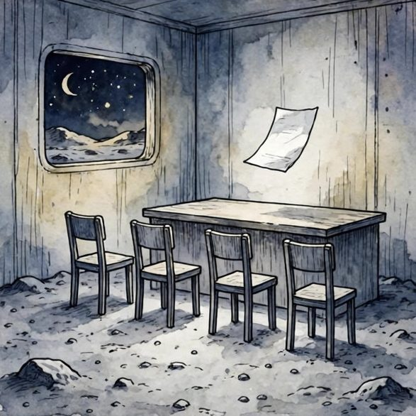
A watercolor of a quiet registry office on pale lunar dust, where a neat row of empty chairs faces a desk and a single paper rises slowly above it, unhurried and upright.
The released citizens did not organize because they were restless. They organized because their paperwork had begun to accumulate in two places at once, and no clerk could say, with confidence, which registry should keep the second copy. A citizen released from weight is still a citizen. He requires filing. The question was referred, in the usual way, to the registrar for an opinion.
The Antigravity Division, Department of Weightlessness, had issued each of them a Certificate of Release, Form HLH-A-001, and entered each name in the Registry of the Unbound. That was sufficient for departure. It was not sufficient for correspondence, for anniversaries, or for the orderly conduct of their common affairs, which continued. The need, once stated in these terms, appeared modest and entirely unavoidable to everyone concerned.
02Citizens of Two Registries
A watercolor of two tall ledger books standing open on adjoining desks, one bound firmly to its surface and one hovering a thumb's width above, while a clerk looks between them.
Every member of the party belongs, by birth or by construction, to the first registry. The Gravity Division, Department of Lunar Construction, records the plot, issues the Lunar Building Permit, Form HLH-G-001, and maintains the Registry of Plots. Plot 001, Mare Tranquillitatis, Sector G, is the first entry and remains in good standing. Every subsequent plot is entered after it, in order, without exception or favour shown.
Release adds a second registry without cancelling the first. The citizen is therefore governed twice and held once, which is the opposite of the usual arrangement. On the Moon, where gravity is 1.62 m/s squared, this distinction is not philosophical. It is measured daily, in the behaviour of soup, tools, and correspondence. The registrar keeps both figures on the same page for ease of reference.
03What a Party Is, on Paper
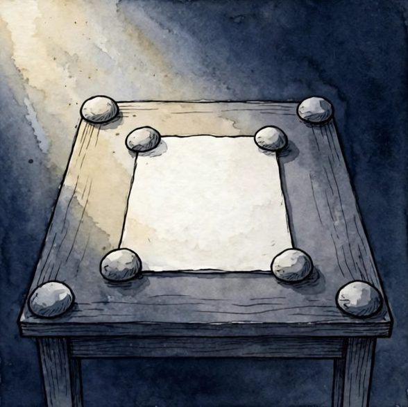
A watercolor of a single sheet of paper lying on a long table, weighted at its corners by four smooth grey stones, with soft light falling across its blank and patient surface.
On paper, a party is a list of persons who have agreed to be counted together for a stated purpose. It requires a name, a form, a place to keep the list, and a person willing to keep it current. Rallies are optional. Refreshments are not recorded. The list is the institution. Everything else belongs to the history of the institution, not to its definition.
The Party of Release was therefore possible from the moment the Registry of the Unbound contained more than one name. Two names make a correspondence. Three make a quorum for certain minor decisions. The founders proceeded carefully, in the belief that an institution should be no larger, on its first day, than its paperwork. No larger institution was proposed, and none was entered in the preliminary record.
04A Party Without a Headquarters
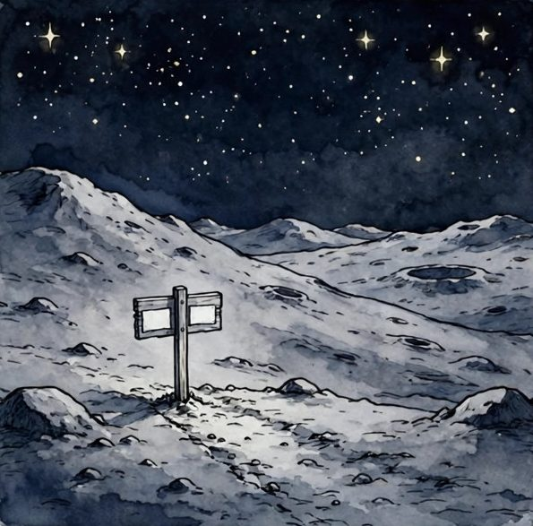
A watercolor of an empty hillside of grey lunar regolith under a black sky, marked only by a small wooden signpost with no building behind it and a path that stops politely.
The party has no headquarters, for reasons of architecture. A headquarters must stay where it is built, and the membership, as a condition of membership, does not. To fix the party to one plot would misrepresent it. To build it lightly enough to follow the membership would produce, in effect, a very slow aircraft. The proposal was briefly minuted and then, sensibly, allowed to rest undisturbed.
The party therefore keeps its address in its registry. Correspondence is directed to the Department of Weightlessness, which forwards it along the Chart of Departures. Replies take longer than letters sent to the ground. This is accepted. A party of the released cannot promise speed, only eventual arrival, correctly addressed. Correspondents are asked to allow for this, and most, being released themselves, do.
05The Politics of a Condition
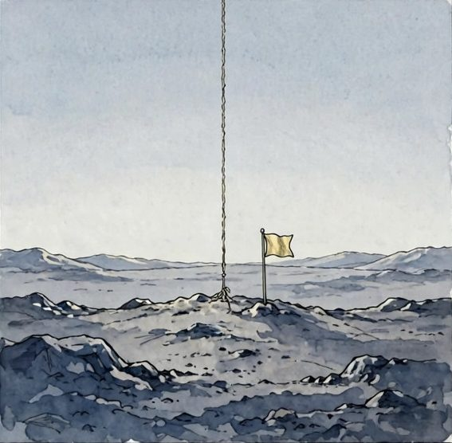
A watercolor of a calm horizon dividing a heavy grey landscape below from a clear pale expanse above, with a thin tether line crossing the boundary and a small flag planted exactly upon it.
The politics of the party concern weightlessness alone: its certification, its registries, its corridors, its courtesies. How a release is granted, how it is recorded, how the released are counted, consulted, and corresponded with. The party has no position on matters that stay on the ground, where other authorities are better seated. Beyond that boundary the party is silent, officially and, in practice, almost entirely.
Within its province, the party is thorough. It debates the Tether Card and its renewal. It studies the Chart of Departures for fairness of sequence. It asks whether a provisional release, renewed forever, is meaningfully provisional. These questions are not small to those who live inside them, which is the definition of politics used here.
06The Founding, on Paper
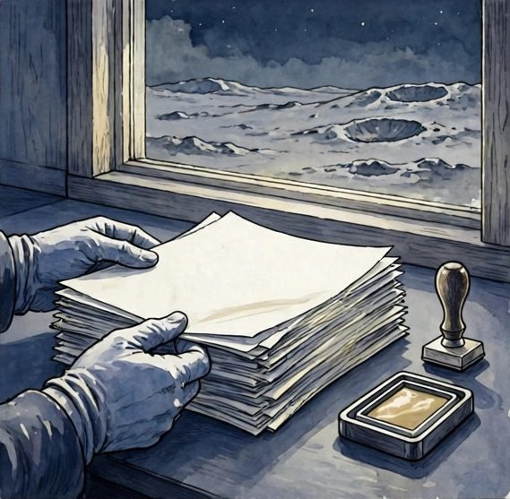
A watercolor of a stack of fresh documents being squared into a neat pile by gloved hands, beside a stamp, an ink pad, and a window looking out over a still grey sea of dust.
The Party of Release was founded on paper, which is where the Hi-Tech Limited Holding conducts all of its most consequential business. There was no ceremony beyond the ceremony of completion: the form filled, the copy made, the copy of the copy filed against loss, and the original placed where originals are placed. The stamp used on that occasion is preserved with the founding papers.
Founding in this manner has advantages. A paper founding cannot be rained upon. It does not require a crowd, a platform, or a favourable wind, all of which are unreliable in the Department of Weightlessness. What it requires is accuracy. The founders supplied accuracy, checked it twice, and initialled the correction of a single comma.
07The First Congress, Held in Writing
A watercolor of a long table covered with envelopes arriving from many directions across a pale sky, each envelope open, each letter laid out in an orderly and widening spiral.
The first congress of The Party of Release was held in writing, in accordance with the practice adopted at the preliminary meeting. Delegates submitted their contributions by post to the Department of Weightlessness. The congress was declared open when the first envelope was opened, and remained open until the last reply was received. Attendance, for this purpose, was counted from the letters themselves, duly signed.
It lasted, by the registry clock, eleven weeks. No delegate complained. Travel to a written congress is instantaneous and its adjournment is mercifully gradual. Decisions emerged in the order the letters arrived, which the founders accepted as a form of fairness older than voting: first written, first considered, nothing lost in transit except haste. The original envelopes have been retained, as congress records, in the grey volume.
08The Name, Decided
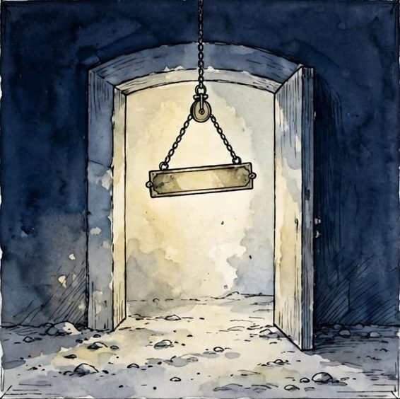
A watercolor of a brass nameplate being lowered gently into place above a quiet doorway, while soft light from the open door falls across lunar dust that no foot has yet disturbed.
The congress adopted the name The Party of Release, without abbreviation in formal correspondence. Release is the word on the certificate, the word in the registry, and the word the citizens use for their own condition at the breakfast table. A party should be named for the fact that made it necessary. The decision was entered in the minutes in the party's new name, for the first time.
With the name came the motto, adopted in the same sitting: It rises, politely. The flag followed as a matter of course, the Chart of Departures carried as a banner, since the chart already shows where every member is going. No further emblem was thought necessary. An institution, like a traveller, should not carry more than it can hold.
09The Charter, First Page

A watercolor of the first page of a great charter resting under glass, its opening lines rendered as soft bands of ink, watched over by a small lamp and a pair of white registrar's gloves.
The first page of the charter states what the party is, whom it represents, and under which forms it acts. It names the Hi-Tech Limited Holding, the Antigravity Division, and the Registry of the Unbound. It defines a member by the Party Card, Form HLH-P-001, and a congress by its correspondence, wherever received. Each definition is followed, in the registrar's hand, by the form number it refers to.
It also records, early and plainly, the limits of the enterprise. The party governs the affairs of the released in their capacity as released. It does not issue certificates, amend releases, or countermand the Department of Weightlessness. A charter that begins with its limits, the founders reasoned, is unlikely to be surprised by them later.
10The Seal of the Party
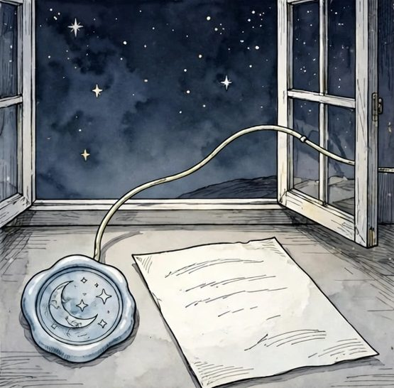
A round wax seal in pale blue-grey rests beside an unbound certificate on a quiet desk, a thin tether curving away toward an open, starlit window.
The Seal of the Party is kept by the Antigravity Division, Department of Weightlessness, in a shallow drawer lined with felt. It is round, unhurried, and heavier than it appears, which the Registrar considers appropriate. When pressed to a Party Card, Form HLH-P-001, it does not command the paper to stay. It records that the paper was present, and that the holder was Released, provisionally, forever.
No seal is applied in haste, and none is applied twice to the same page. If an impression is faint, the faintness is noted in the margin and allowed to stand, for the Registry of the Unbound has learned that clarity and permanence are not the same virtue. A clear seal fades evenly. A faint one is remembered longer by those who witnessed its pressing.
11Gravity Is a Condition, Not a Policy
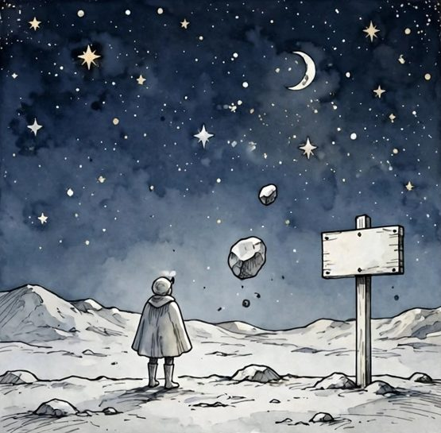
A lone figure stands on pale lunar ground beneath a vast still sky, a dropped stone suspended mid-fall beside an upright, untouched signpost.
Point one of the Program: gravity is a condition, not a policy. The Gravity Division measures it plainly at 1.62 m/s² and issues the Lunar Building Permit, Form HLH-G-001, accordingly. The Party of Release does not dispute the measurement. A condition may be described, recorded, and worked around, but it cannot be repealed by vote, nor improved by argument, nor blamed for remaining exactly what it is each morning.
To treat a condition as a policy would be to expect an apology from it, and none has ever been received. The Program therefore begins with restraint. Foundations in the Registry of Plots are laid with gravity in mind, and departures are prepared in the same spirit. The stone falls because falling is its condition. The citizen rises for entirely separate, properly documented reasons.
12One Tether, by Right
A single fine cord stretches from a quiet lunar plain into empty sky, its near end coiled neatly beside a small, unattended desk.
Point two of the Program: every citizen is entitled to one tether. The entitlement is not earned, renewed by performance, or withdrawn for quiet behaviour. It is entered beside the Certificate of Release, Form HLH-A-001, and acknowledged on the Tether Card. One tether is considered sufficient. More than one would suggest a citizen expected to depart in several directions at the same time.
The tether itself is unremarkable, which is its chief recommendation. It does not pull the citizen back and it does not urge the citizen onward. It simply maintains a relation between a person and a place, at whatever length the day requires. If it is never used, it is nevertheless kept ready, coiled and inspected, because a right unused is still a right held in good order.
13The Right to Let Go of It
An open hand releases a thin cord into still, star-filled air above a calm lunar horizon, the cord drifting gently without falling.
Point three of the Program: every citizen is entitled to one tether, and to letting go of it. The second half of the entitlement completes the first. A tether that cannot be released would be a different instrument entirely, and would require a different form, a different registry, and, the Registrar suspects, a considerably longer and less pleasant set of instructions for all concerned.
Letting go is recorded without ceremony and without inquiry into motive. The Tether Card is marked, the Chart of Departures is updated, and the citizen's status remains unchanged: Released, provisionally, forever. No interval must pass before the tether may be taken up again, if it is found, or replaced, if it is not. The Program regards both departure and return as ordinary administrative weather.
14The Right to Drift
A small solitary figure drifts slowly above a silent grey plain, arms relaxed, with distant low hills receding under a pale and empty sky.
Point four of the Program: the citizen has the right to drift. Drifting is distinguished from travelling, which implies a destination, and from falling, which implies an interruption. To drift is to move at the speed the situation provides, in the direction the situation suggests, for as long as the situation remains agreeable. No itinerary is filed, because none could be honestly promised in advance.
The Registry of the Unbound does not track a drifting citizen continuously, as continuous tracking would defeat the purpose of the exercise. Instead, position is noted at courteous intervals, when the citizen reports, or is reported by a friend, or passes a known landmark at a stately pace. Between such notes, the record shows a dotted line. The dotted line is considered a complete and respectable account.
15Greeted While Drifting
Two distant figures drift past one another in open stillness, one raising a hand in greeting, with a faint tether trailing far behind each.
Point five of the Program: the citizen has the right to be greeted while drifting. A greeting offered to a person in motion acknowledges that motion need not excuse anyone from courtesy. The standard form is brief, spoken clearly, and timed so as not to require the drifting citizen to stop, turn sharply, or pretend not to have heard when hearing was perfectly possible.
If two citizens drift past one another in opposite directions, each is entitled to the greeting and each is expected to return it, resources permitting. A missed greeting is not an offence and is not pursued. It is simply noted, where noting is possible, as weather is noted: it passed, it was not exchanged, and the sky, on the whole, remained entirely undisturbed by the omission.
16All Decisions in Writing
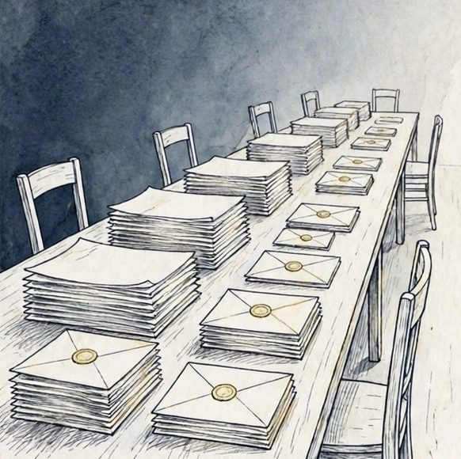
A long table holds neat stacks of letters and sealed envelopes receding into soft light, with empty chairs spaced widely and patiently apart.
Point six of the Program: all decisions are taken in writing, at a distance. Congresses are held in writing, and the Program extends the courtesy to everything smaller than a congress. A decision committed to paper can be read twice, considered once, and answered when the reader's thoughts have settled. Distance, in this arrangement, is not a defect to be corrected but the working condition itself.
The Party Card, Form HLH-P-001, is itself a written decision that its holder belongs. Nothing in the Party of Release is settled by raised voices in a shared room, because there is no shared room, and the voices, if raised, would arrive too late to be useful. Letters arrive instead. They are opened in order, answered in order, and filed without triumph.
17Nothing Decided While Falling
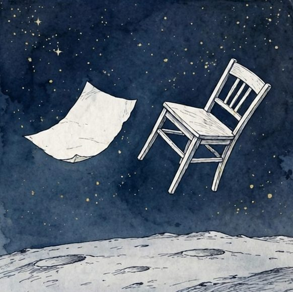
A sheet of paper floats level and unhurried beside a slowly tumbling chair, both suspended in calm air above a distant lunar surface.
Point seven of the Program: no decision is taken while falling. Falling, however brief, occupies the whole attention of the person to whom it is happening, and attention divided in that moment produces documents that later require apology. The Party therefore waits. The ground, or the absence of ground, will clarify the matter soon enough without assistance from hasty resolutions passed mid-descent.
A proposal that arrives during a fall is held, unread if necessary, until the citizen is either landed, recovered, or comfortably drifting. Only then is it opened, dated, and considered in the usual written manner. Citizens have observed that most urgent questions lose their urgency during a fall and regain only their proper size afterwards, like objects receding peacefully into a well-kept distance.
18Distance Is Not Disagreement
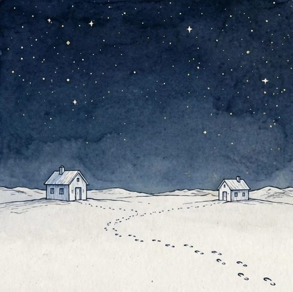
Two small houses stand far apart on a pale plain under the same wide sky, a faint dotted path of footprints curving gently between them.
Point eight of the Program: distance is not disagreement. Citizens of the Party of Release may be separated by corridors, craters, or considerable stretches of unmarked sky, and remain in complete accord on every matter the Registry records. Proximity has never been listed as evidence of agreement, and the Program declines to begin listing absence as evidence of its opposite.
Correspondence should therefore be read for what it says, not for how far it has travelled. A letter that arrives after a long interval has not been reconsidered by the distance; it has only been carried by it. When a reply is slow, the Registrar assumes the route was long. When a reply is brief, the Registrar assumes the thought was short. Both assumptions preserve the peace.
19Opposing Nothing, and No One
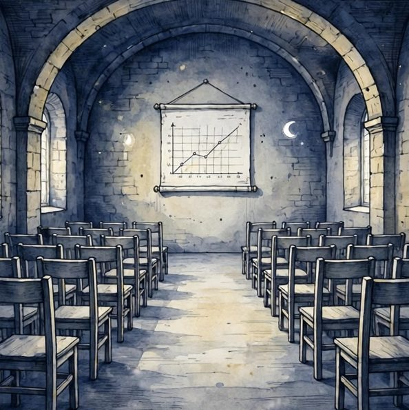
An empty debating hall in soft watercolour light, rows of unoccupied chairs facing one another calmly, with a single chart hanging quietly at the far end.
Point nine of the Program: the party opposes nothing and no one. Opposition would require the Party to hold still against something, and holding still against something is a posture the released citizen has, by definition, been released from. The Party maintains positions, records them in writing, and allows other positions to exist at their own documented distance without interference or commentary.
This is not indifference, and the Registrar is careful with the distinction. The Party cares for its members, its tethers, its silence, and its charts with steady attention. It simply refuses the additional labour of being against. Energy saved in this manner is redirected to correspondence, to greeting those who drift past, and to keeping the Registry of the Unbound in its usual impeccable and unhurried order.
20It Rises, Politely
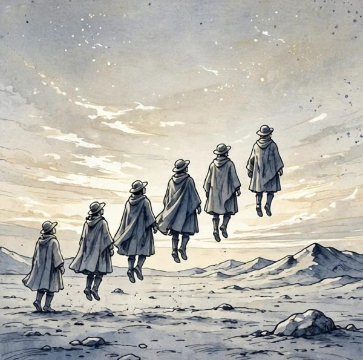
A small gathering of figures lifts slowly and evenly from a quiet plain, hats still in place, beneath a broad and undisturbed morning sky.
Point ten of the Program: it simply rises, politely. The motto of the Party of Release is not a summary of this point but its entire argument, repeated for convenience on suitable occasions. Rising, when done politely, involves no announcement, no displacement of others, and no suggestion that those remaining below have made an error in judgement by staying where they are.
Politeness in ascent consists mainly of pace and clearance. One rises slowly enough to be greeted, and far enough aside to avoid the tethers of neighbours. The Chart of Departures records such ascents without adjectives. Afterwards, the plain is exactly as it was, minus one citizen, plus one entry, and the Department of Weightlessness considers the transaction closed, complete, and satisfactory to all parties concerned.
21Paper Outlasts Weather

A stack of documents rests under a smooth stone on an open plain while soft rain and wind pass around it, the pages calm and undisturbed.
Point eleven of the Program: paper outlasts weather. This has been tested involuntarily on several occasions, when storms crossed the Registry's courtyards and the citizens took shelter while the documents, properly weighted, did not. Afterwards the citizens returned, somewhat damp, and found their releases, permits, and Party Cards waiting with a composure that the Registrar can only describe as professional.
The Program draws a modest conclusion from this. Decisions written down survive the conditions under which they were made, including enthusiasm, fatigue, and sudden changes in pressure. A spoken resolution belongs to its weather and disperses with it. A filed one remains available for quiet re-reading in calmer air, which is why the Party of Release continues to conduct its entire existence on paper.
22Numbered, Not Ranked
A neat row of numbered membership books lies open on a long table, each at the same height, under even and impartial light.
Point twelve of the Program: every release is numbered; none is ranked. The Party Card, Form HLH-P-001, is numbered, and the first edition comprises one hundred, but the number records only the order in which the Registry received the citizen. Number seven is not senior to number eight. Number eight has not overtaken number seven. They are adjacent entries, and adjacency is not a competition.
The same discipline governs the Registry of the Unbound as a whole. Certificates of Release are filed in sequence and retrieved without preference, whether the citizen departed dramatically at dawn or drifted off during routine correspondence. To rank releases would require a standard of rising, and the Party has examined the idea in writing, at a distance, and respectfully allowed it to lapse.
23A Friend Holds the Tether
One figure stands calmly on pale ground holding a loose cord that rises gently into the sky, where a second small figure floats in quiet stillness.
Point thirteen of the Program: the tether is held by a friend, not by an office. An office can hold a document, a key, or a position, and hold each of them correctly. A tether, however, responds to the holder's attention in ways that procedure cannot fully describe. The friend notices slack, tension, and silence along the line, and interprets each without needing to file a report.
The arrangement is voluntary on both ends, which the Program regards as its foundation. A friend may pass the tether to another friend, provided the transfer is acknowledged and the citizen above is informed in writing when practicable. The Department of Weightlessness records who holds, but does not appoint holders. Some responsibilities, the Registrar notes, improve considerably when they are chosen rather than assigned.
24Silence, Held Together
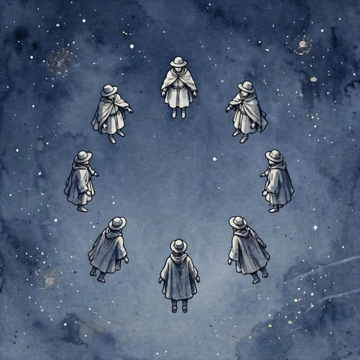
A circle of small figures floats at ease in open air, hands resting, facing inward across a calm and unbroken expanse of quiet sky.
Point fourteen of the Program: silence, held together, is a form of speech. The anthem of the Party of Release is a held silence, performed whenever members correspond in spirit while saying nothing in particular. A silence held alone may be merely private. A silence held together has structure, duration, and agreement, and can be entered and left by mutual understanding without a word being misplaced.
During such silences, no business is transacted, because transacting business would interrupt the very item under consideration. Participants afterwards report that much was settled, though the Registry, properly, records only the date and the duration. Citizens who find the practice difficult are encouraged to begin with short silences, held in good company, and to let the quiet lengthen at its own unhurried pace.
25The Party Card

A watercolor of a small membership book resting open on a registry desk beside a Certificate of Release and a Tether Card, all three arranged in a neat, unhurried row.
The Party Card is the membership book of the Party of Release, issued under Form HLH-P-001 by the Antigravity Division, Department of Weightlessness. It is given to a citizen whose release is complete and whose entry stands in the Registry of the Unbound. Possession of the Card records membership. It confers no additional altitude, which the citizen already has.
The Card is small enough for a pocket and large enough for its fields, which are described in a following section. It is printed on stock chosen for durability in low gravity and lower filing cabinets. Each Card is numbered, entered, and sealed before issue. A Card that has not been entered does not exist, however convincingly it may float.
26A Book, Not a Badge
A watercolor of a citizen reading a small bound book while floating in a bright corridor, the book held open with both hands and turned at a page.
The Party Card is a book, not a badge. It is not pinned, displayed, or held up at doorways. It opens, it has pages, and its contents accumulate over the years of a membership: entries, renewals, congresses attended in writing, and departures duly charted. A badge declares. A book records. The Party prefers the second, quieter instrument.
Members are not required to show the Card on demand, because there is no demand. Another member wishing to confirm a standing writes to the Party Desk and receives an answer by post. The Card stays in its pocket, where books belong when not being read. Its authority is in its pages, not in its presentation.
27The Fields of the Card

A watercolor of an open membership book seen from above, its blank ruled pages and empty boxes rendered in soft washes, with a pencil resting across the gutter.
The fields of the Card are few and are completed in order. They are: the name of the citizen as entered in the Registry of the Unbound; the number of the Certificate of Release; the Card number; the date of issue; and the page for renewals. A final field, headed in the form simply as Remarks, receives whatever the record requires and nothing more.
No field asks for weight, for obvious reasons, and none asks for destination. Where a citizen is going is a matter for the Chart of Departures, not for membership. Fields left inapplicable are ruled through with a single line, so that an empty box is never mistaken for an oversight. The Card, when complete, reads plainly and says little.
28Card No. 001
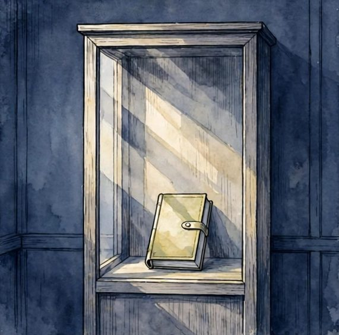
A watercolor of a single small book displayed alone in a glass-fronted cabinet in an otherwise empty office, morning light falling across its cover.
Card No. 001 is the first Party Card, the first entry under Form HLH-P-001 and the beginning of the numbering that all later Cards follow. It was entered before any other, in the first hand the Party employed for the purpose, and it set the standard for spacing, ink, and restraint that the Department has maintained without revision since.
The Card is retained by the Party Desk and is not in circulation. It may be viewed during office hours by any member who asks in writing, and it is brought out without ceremony, placed on the desk, and returned to its drawer afterward. Its distinction is purely numerical. The Party regards this as distinction enough.
29What the Card Proves
A watercolor of a clerk comparing an open membership book with a large registry volume on a desk, nodding once, the two books aligned side by side.
The Party Card proves three things, and the Department lists them without enlargement. It proves that the citizen named in it was released, under a Certificate of Release duly issued. It proves that the citizen is a member of the Party of Release. And it proves that the entry in the Registry of the Unbound and the entry in the Card agree.
This is sufficient for all Party purposes: for voting in a congress held in writing, for renewal, for the charting of departures, and for being remembered accurately by the institution. The Card is accepted by every office of the Antigravity Division without further question. Offices of the Gravity Division accept it as well, colleagues being colleagues, and file their acceptance.
30The First Hundred Cards
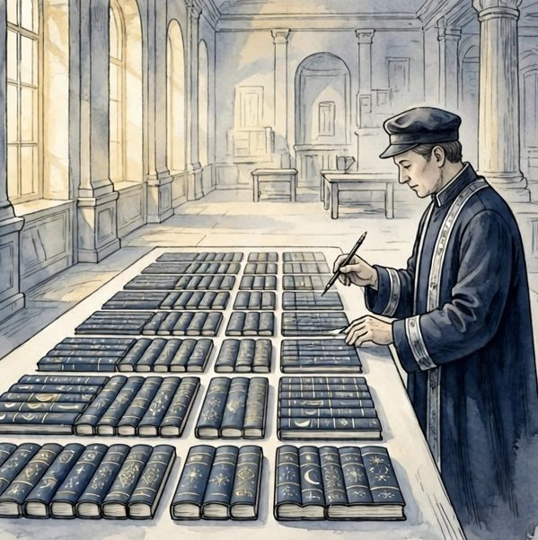
A watercolor of ten rows of ten small books arranged on a long table in a bright hall, a clerk counting them unhurriedly with the tip of a pencil.
The first edition of the Party Card is one hundred cards, numbered in order from Card No. 001, and issued in that order as citizens completed their release and were entered. No number in the first hundred was reserved, exchanged, or held back for a citizen considered more elevated. The sequence is the honour, and the sequence is strictly first come, first recorded.
When the hundredth Card was entered, the edition closed and the fact was noted in the Registry without ceremony. Later Cards continue the numbering beyond the edition and are identical in form, stock, and standing. Members of the first hundred are listed together on a single page at the Party Desk, where the page is available to any member who asks.
31The Party Desk
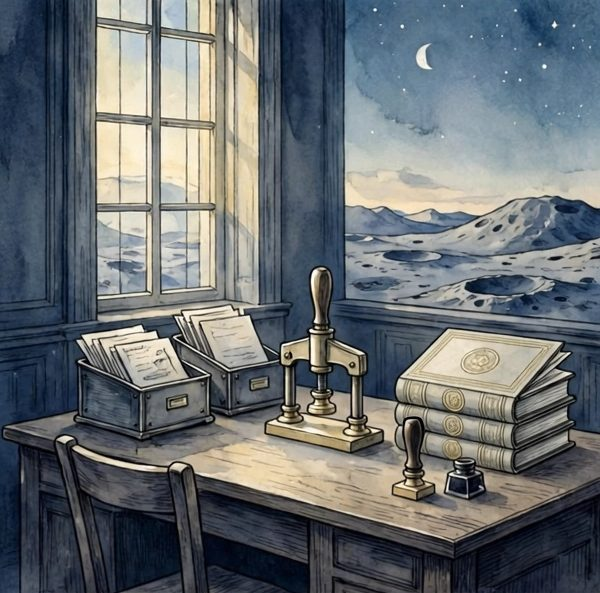
A watercolor of a broad wooden desk in a calm office, with in-trays, a seal press, bound registries, and a single chair, morning light entering from a tall window.
The Party Desk is the office that receives all filings of the Party of Release. Applications, renewals, reports of loss, congress papers, and correspondence of every kind arrive at the Desk, and everything the Party issues leaves from it. The Desk is a desk. Behind it sits a clerk of the Department of Weightlessness, whose name is recorded and whose manner is procedural.
Filings are acknowledged in the order received, entered the same day where the day permits, and answered by post. The Desk keeps the Registry of the Unbound current, holds Card No. 001, and maintains the Chart of Departures for members. No filing is refused for altitude, handwriting within reason, or delay. The Desk is the ground on which the Party's records stand.
32The Congress in Writing
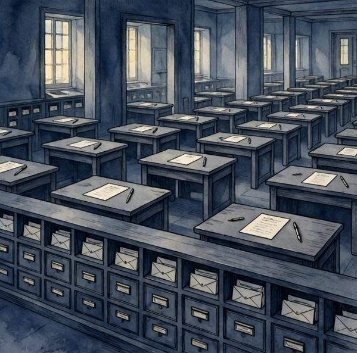
A watercolor of many desks in many distant quiet rooms, each with a single sheet of paper and a pen at rest, connected only by envelopes waiting in a row of letterboxes.
A congress of the Party of Release is held in writing, because the members are dispersed, at altitude, and under no obligation to gather. The Party Desk issues the agenda by post, numbered and complete. Each member considers the items in private, in silence consistent with the anthem, and returns a written response within the period stated on the agenda itself.
The responses are collected at the Desk, counted in the order received, and entered into the congress record, which is then circulated to all members by post. A decision is whatever the record says it is, and the record is the congress. No hall is booked. No photograph is taken. The congress rises, politely, from the page, and adjourns upon filing.
33The Keeper of the Tether
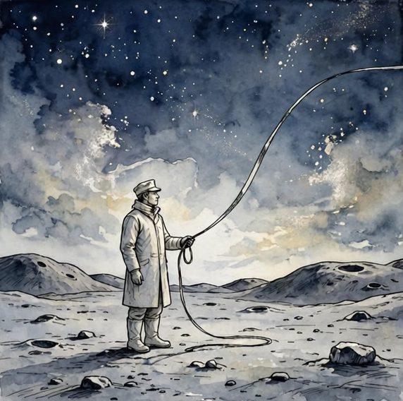
A solitary officer in a pale coat holding a long, slack tether that curves gently upward into a wash of silver-grey sky above a quiet lunar plain.
The Keeper of the Tether is the party officer responsible for tethers, and for knowing, politely, who holds whose line. The office is not hereditary, elective in the ordinary sense, or surrendered lightly. It passes, when it passes, by a letter of transfer recorded in duplicate, one copy retained by the Party Desk and one copy left to drift in the Registry.
No tether in the Keeper's charge has ever been pulled. The duty, as minuted, is to hold without holding fast, and to release without abandoning. When a citizen of the Unbound asks whose line they are on, the Keeper answers from memory first, and from the register second, and the two answers, to date, have always agreed.
34The Registry of the Unbound, Party Copy
An open ledger on a lectern, its pages filled with fine ruled lines and small ink figures of rising figures, bathed in pale lunar light.
The Registry of the Unbound is maintained in two copies. The departmental copy rests with the Antigravity Division, Dept of Weightlessness, beside the Certificates of Release, Form HLH-A-001, in the cabinet reserved for that purpose. The Party Copy rests with the Party Desk, and is, by agreement, identical in every particular except the handwriting, which is slightly more hopeful.
Each entry records a name, a date of release, and the number of the corresponding Party Card, Form HLH-P-001, where one has been issued. Entries are never struck through. A citizen who returns to weight is not removed; a marginal note is added, in pencil, recording that the citizen is presently elsewhere, and the line is left respectfully blank. The Party Copy has one public page: the party's digital Hall of Fame, where the profile of every member who writes to the Desk — name, number, and date of filing — is placed on the record and kept there, in writing, like everything the party keeps. It admits no portraits and permits no removal; fame, in the party's keeping, is a filing that has been answered.
35Elections, Held by Letter

A procession of sealed envelopes drifting in a loose, orderly stream across a pale sky toward a small distant desk on a hill.
Elections in The Party of Release are held by letter, there being no hall that could contain the electorate at a common level. Ballot papers are issued by the Party Desk, marked at leisure, and returned by post. The count begins when the returning officer judges that sufficient time has elapsed for even the most distant reply to have had its chance.
Results are announced in writing, in the same envelope size as the summons, so that victory and defeat arrive in identical stationery. No candidate has ever campaigned in person. A short statement of intention, not exceeding one page, is permitted, and most candidates, out of courtesy to the count, submit considerably less than the permitted page.
36The Ceremony of Admission

A watercolor of a new member seated at the Party Desk while a clerk opens a fresh membership book to its first clean page.
Admission is conducted seated, at the Party Desk, with the application placed squarely between the applicant and the clerk. The clerk reads the name aloud once, to confirm that it belongs to the person present, or drifting nearby. The applicant confirms. The Party Card, Form HLH-P-001, is then opened to its numbered page, and the number is read aloud as well, so that both parties to the moment agree on where it begins.
There is no oath, the Party having found that unbound citizens keep their word better without one. Instead, the new member is offered the pen, signs where indicated, and receives the card with both hands, or with one hand and an apology. The held silence follows, lasting as long as it lasts. Then the clerk files the application, stamps the copy, and the newest member of the Party of Release is free to go, in every sense the registry recognises.
37The Ceremony of Release

A watercolor of a citizen rising gently from a chair in a bright room while a clerk watches calmly, certificate in hand, making no move to assist.
The Ceremony of Release belongs properly to the Antigravity Division, which issues the Certificate of Release, Form HLH-A-001, under its own procedures. The Party of Release attends as witness and as family. Its role is to be present, to hold the silence afterward, and to ensure that someone who knows the new citizen's name is standing, or floating, close enough to say it.
When the certificate is granted, the Party records the event in the Registry of the Unbound's margin of its own book, a courtesy entry rather than a claim. Applause is not customary. What is customary is a particular quiet satisfaction, and the opening of the nearest window, whether or not the window opens. Several of the Party's windows are painted shut. The gesture is made anyway, in full, because the gesture is the point.
38The Held Silence
A watercolor of a small assembly standing perfectly still in a pale hall, heads slightly raised, as dust motes hang motionless in the light.
The anthem of the Party of Release is a held silence, performed standing, seated, or at altitude, according to the condition of those present. It begins when the Keeper of the Tether lowers one hand. It ends when the Keeper raises it again. Between those two gestures, nothing is required of anyone. Breathing is permitted and, in most cases, continues. The silence is not empty. It is, the Party maintains, fully occupied.
New members occasionally ask how long the anthem lasts, and the Desk answers honestly that this has never been timed. Estimates in the minutes range from a held breath to a long afternoon. What matters is that the silence is held in common, the way a tether is held: not tightly, not carelessly, and by more than one pair of hands. When the hand rises, ordinary sound resumes, and the clerk notes simply that the anthem was performed.
39The Loyal Opposition of the Downward
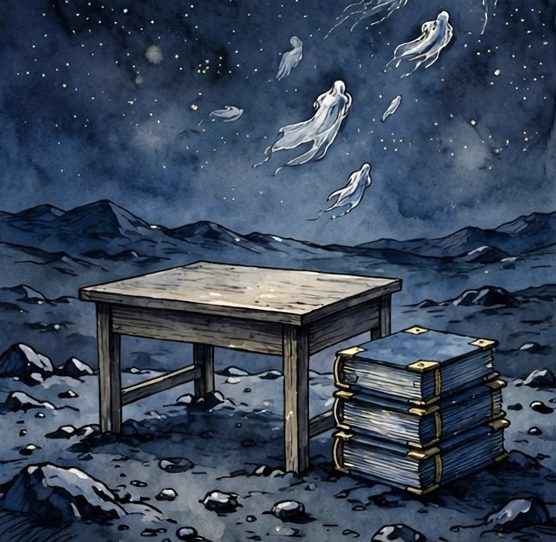
A sturdy desk anchored firmly on a dark lunar plain, facing upward toward faint drifting shapes, with a neatly stacked pile of heavy-looking ledgers beside it.
The loyal opposition of The Party of Release is its downward colleagues in the Gravity Division, Dept of Lunar Construction, the party's counterpart program, and its loyalty has never been in question. It opposes, in principle, the direction of travel. Where the party records a release, the Division records a plot. Where the party issues a card, the Division issues a permit, and files both facts without resentment.
This rivalry is institutional, courteous, and complete. The Division maintains, in its paperwork for Mare Tranquillitatis Sector G, that what rises must be accounted for by what remains below. The party maintains that what remains below is, chiefly, the paperwork. Both positions are entered in the minutes, and both are, within the Holding, entirely respectable.
40Two Desks, One Holding
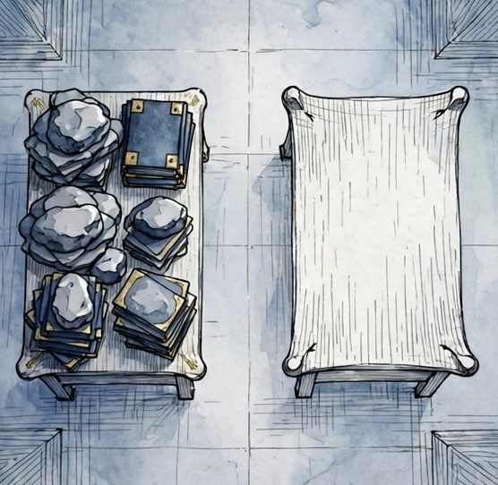
Two desks seen from above in a shared hall, one weighted with stones and ledgers, the other light and almost lifting at its corners, under even pale light.
The Party Desk and the desk of the Gravity Division stand, on paper, in the same hall of Hi-Tech Limited Holding. In practice each administration describes the hall differently: the Division by its floor plan and load-bearing columns, the party by the quality of the air near the ceiling. Both descriptions are accepted by the Holding as accurate.
Joint administration is therefore a matter of translation. A request that arrives as a Lunar Building Permit, Form HLH-G-001, may leave as a Certificate of Release, Form HLH-A-001, with a covering note from each desk. The covering notes are the true constitution of the Holding, one registrar has observed, and they are kept, bound, in triplicate.
41Two Desks
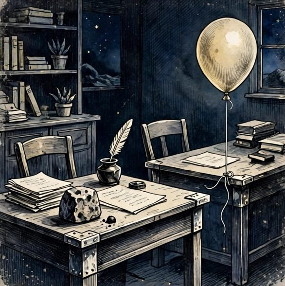
Two desks in one office, a stone paperweight on one, a balloon tied to the other.
Hi-Tech Limited Holding maintains one office for two conditions. On the left, the Gravity Division, Department of Lunar Construction, issues the Lunar Building Permit, permission to build under gravity. On the right, the Antigravity Division, Department of Weightlessness, issues the Certificate of Release. The furniture is the same. The hours are the same. The distinction is the direction.
A stone paperweight holds the papers on the Gravity desk, where weight is expected and useful. A balloon is tied to the Antigravity desk, where weight is the matter under consideration. Neither object is decorative. Each is a working reference, consulted when a form is unclear about whether it should stay or go.
42Why File Weightlessness
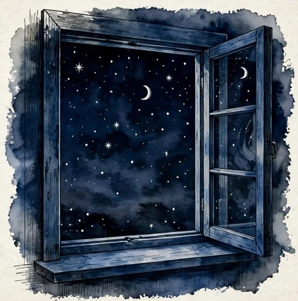
An office window opening onto stars, with a desk and ledger below it.
Visitors sometimes ask why an office would file weightlessness at all. The answer given is procedural. What is not filed is not recorded, and what is not recorded cannot be confirmed later. A citizen who has been let go deserves the same certainty as a citizen who has been built upon.
The office window, in the Division's premises above Sector G, opens onto stars and is kept open for ventilation of the records. Files left near it are weighted with a small stone, borrowed each morning from the other desk. The arrangement is understood by both Divisions and has never required a memorandum.
43The Certificate
The Certificate of Release on a desk, its pale gold border complete and even.
The Certificate of Release is the sole instrument of the Antigravity Division. It grants permission to imagine, in writing, being let go: one citizen, released from gravity, provisionally, forever. It is a single sheet, printed with a pale gold border, and it states its terms on its face, without annexes or conditions in smaller type.
The document does not describe a journey, assign a destination, or promise a view. It records a change of status and provides the paper on which that change may be kept. Citizens file it as they file other important papers, except that this one is customarily placed on top of the others.
44Form HLH-A-001
A wooden cabinet tray holding printed forms, stacked square and ready for the desk.
The certificate is issued under Form HLH-A-001, the first and currently only form of the Antigravity Division. The form number appears in small type at the foot of the document, where form numbers are customarily placed, and in the cabinet index, where the printed stock is held in a wooden tray.
Interest in a certificate is registered through the Party Desk form, and through no other channel. The Party Desk and the Desk of Releases share a wall and a ledger, and each takes the other's filings without remark. The tray holds the blank stock in tens, counted each Monday against the Registry. Discrepancies between the tray and the Registry are investigated on the Tuesday, and have so far been resolved by recounting, in silence, until both agree.
45Numbered by Hand
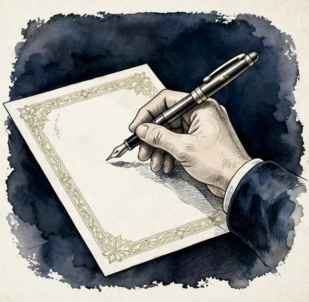
A hand numbering a certificate 001 with a fountain pen, the ink still wet.
Each certificate is numbered by hand, in ink, at the time of issue. The present document is Certificate No. 001 of 100, the first entry in the Registry of the Unbound. The number is written slowly, because a number written slowly can be read at the same speed by whoever checks it later.
The edition is limited to one hundred certificates, not as a matter of scarcity but of registry practice. One hundred entries fill one volume, and one volume fills one shelf, and the Division prefers its records to end where its furniture does. Certificate No. 001 therefore opens a volume that is expected to close in an orderly manner.
46The Silver Seal
A silver wax seal being pressed onto a certificate, the star taking shape.
The certificate is sealed in silver, not gold. Gold is the metal of the Gravity Division, of plots and permits and things that remain. Silver is assigned to the Antigravity Division because it is the colour of the seal under starlight, and because the distinction, once made, is maintained without exception in all subsequent filings.
The seal is pressed once, firmly, and not repeated. A second pressing would suggest the first had failed to hold, which is a Gravity concern and does not apply here. The star at its centre is left slightly imperfect when the wax cools unevenly. Such impressions are recorded as valid and are not corrected.
47Provisionally, Forever

A blank wall plaque, polished, reserved, and as yet bearing no inscription.
The status of the released citizen is stated on the certificate in three words: Released, provisionally, forever. Each word is required to earn its place. Released records that the letting go has occurred and is not merely proposed. Provisionally records that the office retains its duty to review what it has done.
Forever records the duration under which the release is filed, and it is not qualified by the word before it. The Division holds both terms together without difficulty: a provisional act, permanently recorded. The wall plaque in the office, reserved for this wording, remains blank until the phrasing has survived a full year of use.
48A Volume, Not a Plot
A gridded star chart of the sky above Sector G with one marked volume.
The site of the Antigravity Division is not a plot but a volume of sky above Mare Tranquillitatis, Sector G, at 0.67° N, 23.47° E. On the chart it is marked as a measured emptiness, gridded and bounded on all sides. It is described in the register as the quiet part, seen from slightly above.
A plot has a surface and can be stood upon, which this site politely declines to offer. A volume has height, depth, and room for drift, and is therefore recorded in three dimensions. The Chart of Departures is kept at a scale of 1 : imagination, which the Registry finds accurate enough.
49Weather: Dust
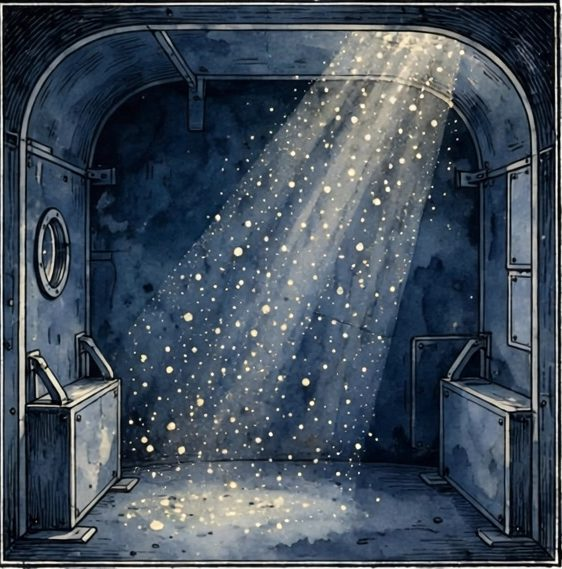
Dust motes drifting in a shaft of light inside a habitat.
The volume has weather, and the first form of it is dust. Dust motes drift through shafts of light inside the habitat, crossing slowly and changing direction for reasons of their own. The Registry records their passage without attempting to assign it a particular cause.
Dust here does not settle in the ordinary sense, because there is no ordinary sense in which to settle. A mote may remain in the light for an entire watch, visible and unhurried. Cleaning, when it occurs, is a matter of gentle redirection rather than removal.
50The Hovering Library
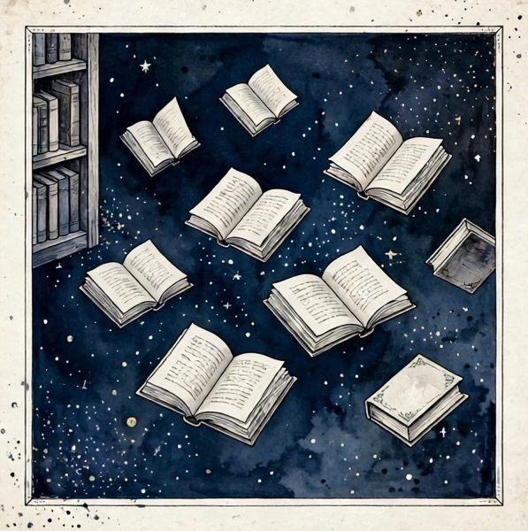
A library whose books hover at reading height.
The library keeps its books hovering at reading height, each volume holding its place in the air of the room. A reader selects a book by taking it, and the shelf it leaves remains marked by its absence. The order of the collection is maintained by habit and memory.
Books returned to the wrong height are not scolded, only re-shelved by the next reader who notices. Reading is done drifting, seated on nothing in particular, for as long as the book requires. When a book is finished, it is released. It knows its way back.
51The Tether Card
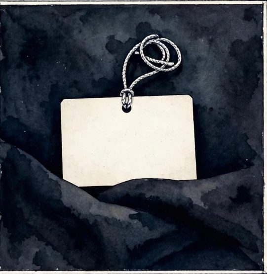
A small Tether Card, plainly printed, with its silver cord attached.
The Tether Card is the smallest of the three artifacts and the most personal. It certifies that a named holder keeps the line of the released citizen, in the polite fiction that someone does. The Department of Weightlessness issues the card without questions. A line with a name beside it worries less, on both ends.
The card is carried, not filed, and its silver cord is attached before issue. The cord is a reminder rather than a restraint, since nothing at Sector G pulls hard enough to require more. If the cord is lost, the card remains valid. If the card is lost, the Registry issues another, without comment.
52The Chart of Departures
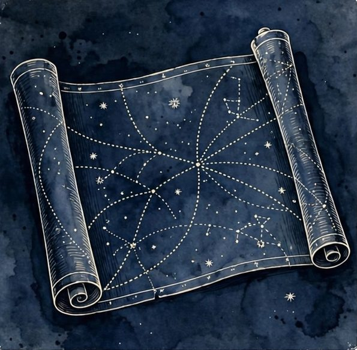
The Chart of Departures unrolled, its dotted paths crossing a quiet star field.
The Chart of Departures is surveyed like any honest map of the volume above Sector G, the quiet part, seen from slightly above. Its stars are fixed by repeated observation and checked against older charts. Its coasts are the edges of the sky itself. Nothing on the chart is decorative, except the border, which the cartographers defend.
Departures are entered as dotted paths, because no departure at Sector G proceeds in a straight or continuous line. Returns are deliberately left unmarked, the Registry having decided that a return should arrive as news, not as an expectation. The scale is printed in the corner, without apology. It reads, in full, one to imagination.
53The Three Together
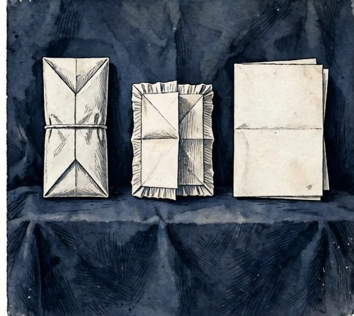
The three artifacts arranged together on dark cloth, in registry order.
Laid together, the three artifacts account for a whole release without overlap. The Certificate, No. 001 of 100, Form HLH-A-001, says that the citizen may go. The Tether Card says who holds the line in the meantime. The Chart says where the going was last observed; each document answers one question and declines the others.
Registry order places them left to right as they are used in the procedure. Certificate first, because permission precedes everything in a well-run holding. Card second, because a holder is named before any line is trusted upward. Chart last, because a departure can only be drawn after it has, in fact, departed; the arrangement is never varied for visitors.
54What Is Dropped, Departs
A dropped cup suspended beside a table, beginning its quiet departure.
The first condition of weightlessness at Sector G is simple to state and slow to learn. What is dropped does not fall, because falling requires an agreement with the ground that has been formally ended. Instead, the dropped object departs. It begins a modest journey of its own, at walking pace, in the direction it was released.
New arrivals are advised to watch a dropped cup before attempting philosophy on the subject. The cup neither hurries nor hovers apologetically beside the table. It goes, as citizens go, under the terms of its release. Retrieving it is permitted, of course, while chasing it dramatically is discouraged in the pamphlet, on grounds of dignity alone.
55Greetings in Passing
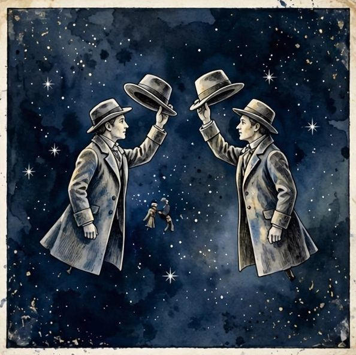
Two drifting neighbours tipping their hats to one another in passing.
Neighbours at Sector G meet rarely, at considerable distance, and almost always in passing. Custom therefore requires a greeting from everyone who drifts within sight of anyone else. A raised hat, a lifted hand, or a clearly spoken good day all satisfy the obligation. The greeting acknowledges a simple fact: shared sky is still a neighbourhood.
No one is required to stop, converse, or alter course in order to be polite. Drifting schedules are respected, and a greeting returned late is still counted as returned. The Department keeps no register of greetings given or withheld. It relies, in this one matter entirely, on the good habits of citizens released in good order.
56Dust, Held in Common
Fine dust settling equally upon a crown and upon a broom.
Dust at Sector G belongs to whoever it settles on, as it does in every department of the Holding. The difference here is that weightless dust settles on everyone equally, given time enough. It crosses ranks, offices, and dignities without consulting any of them. A crown and a broom receive, in the end, precisely the same share.
For this reason nobody sweeps at Sector G, the task having no defensible beginning or end. Everybody shares the dust instead, as a minor condition of the common sky. Visitors from heavier departments sometimes find this arrangement untidy. Residents consider it the fairest system in the Holding, and point out that it administers itself without staff.
57Visible, in Principle
A careful drawing of a habitat, pinned beside the chart for reference.
The released must still be visible from Earth, at least in principle, under the terms kept by the Registry. In principle is a generous standard, and the Department administers it generously. A telescope sighting qualifies, as does a confirmed instrument reading. On one celebrated occasion, a particularly good drawing was accepted by the clerk on duty.
The drawing in this plate shows a habitat rendered carefully, by a patient hand, from a reliable report. It is pinned beside the chart, where its subject can be compared with the dotted paths. Nobody claims the drawing is the habitat. The Registry claims only that the habitat remains accounted for, which is the actual requirement.
58Never Pull Another's Tether
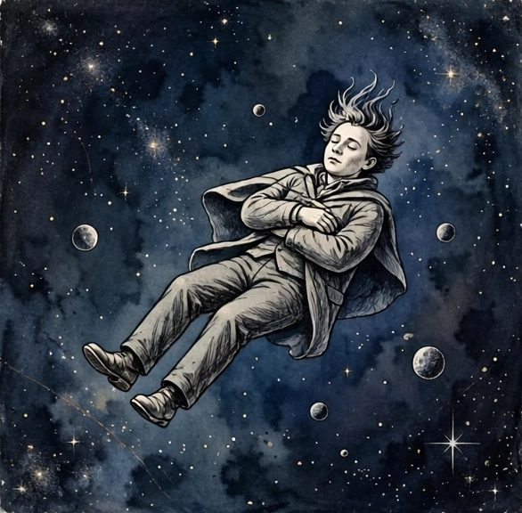
A citizen drifting with arms folded, perfectly calm.
The first condition is simple, and it is recorded without emphasis. Never pull another citizen's tether. A line under sudden tension answers at once, and the citizen at its end arrives somewhere unchosen. In the volume, an unchosen arrival is considered a discourtesy of the plainest kind.
A citizen who wishes to approach calls first, or waits to be noticed. Distance here is not neglect. It is the ordinary space in which each person keeps their own height, their own turning, and their own unhurried view of the quiet below, for as long as the view requires.
59Silence Is Shared Property
A string quartet drifting at four heights, playing.
Silence in the volume is shared property. It belongs to no citizen and is kept by all of them, the way a path is kept by being walked on gently. Even music is arranged with this in mind. A string quartet drifts at four heights, playing, and leaves the silence intact between notes.
No one raises a voice to cross the volume. Messages travel by hand, by light, or by waiting until the distance has shortened on its own. What is not said immediately is rarely lost. In the quiet above Mare Tranquillitatis, Sector G, most things keep until they can be said nearby.
60Entry in the Registry

A citizenship ceremony, each citizen holding the next one's tether.
Entry in the Registry of the Unbound means this: a name is written down, a height is acknowledged, and a citizen's line is placed in named keeping. The ceremony is brief. Each citizen holds the next one's tether, so that for one minute the whole company is held by the whole company.
The citizen receives a CERTIFICATE OF RELEASE, No. 001 of 100, Form HLH-A-001, issued by the Antigravity Division, Department of Weightlessness, of the Hi-Tech Limited Holding. The document certifies no achievement. It certifies a condition, calmly stated, and the Registry's intention to keep stating it accurately.
61The Great Registry Book
A great registry book whose pages float open.
The great registry book is too large for any desk and is therefore kept in the air, where its pages float open at their own height. Readers rise to meet the entry they need. Bending over the book is impossible, and the Department has come to regard this as sound design.
Every release is entered here, for the site it governs: a volume of sky above Mare Tranquillitatis, Sector G, the quiet part, seen from slightly above. The book does not leave the volume. Copies may be requested and are made slowly, by hand, at the height of the original page.
62The First Untying
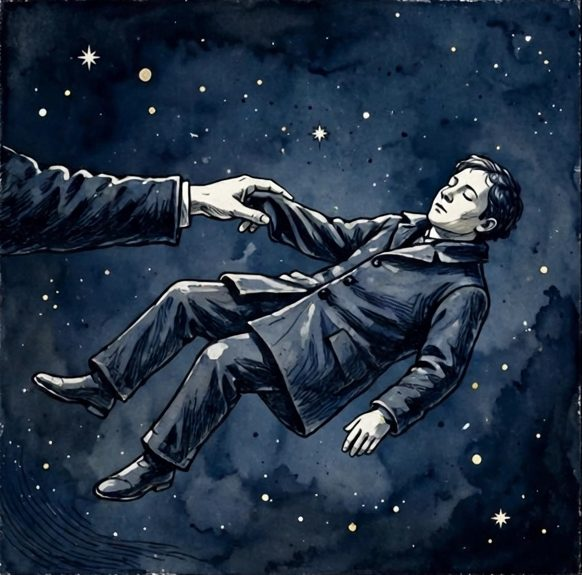
A citizen untied for the first time, steadied by a friend's fingertip.
The first time a citizen is untied is recorded, though nothing about it is staged. The line is loosened by its holder, in daylight, with friends nearby and no speeches prepared. Most citizens, the record shows, notice the moment slightly after it has happened, which is considered the proper order.
For one minute, a friend's fingertip replaces the line. It touches the citizen's hand lightly, offering no support that could be leaned on, only the fact of contact. After a minute the fingertip withdraws and the citizen remains. The entry is then completed in the book, in ordinary ink.
63The Circle on the Surface
The ceremony: a circle of citizens on the surface, one rising slowly at the centre.
The citizens stand in a circle on the surface, in the quiet part, seen from slightly above, and keep their places for the duration of the ceremony. At the centre, one citizen rises slowly, not by effort and not by device, but as the certificate takes effect. The rise is gradual and is allowed to be gradual.
The circle does not break and does not applaud yet. Each person watches the centre, where the distance between boot and ground increases by small, even amounts. The registrar measures nothing aloud. When the rising citizen has cleared the height of the chair, the next part of the ceremony is announced from the surface.
64The Ribbon, Cut in Mid-Air
A ribbon cut in mid-air, its ends curling away.
A ribbon is held across the place of ceremony, at waist height, and is cut in mid-air with the department scissors. The cut is made once, cleanly, and is not repeated for effect. For a moment both ends remain where the ribbon was, level and separate, before they begin to move apart on their own.
The two ends curl away at their own speeds, one a little quicker, one a little slower, and the Registry does not correct the difference. A clerk follows each end with a steady hand and collects it without pulling. The ends are later kept at the Desk of Releases, folded, labelled, and filed with the stub.
65The Bell That Makes No Sound
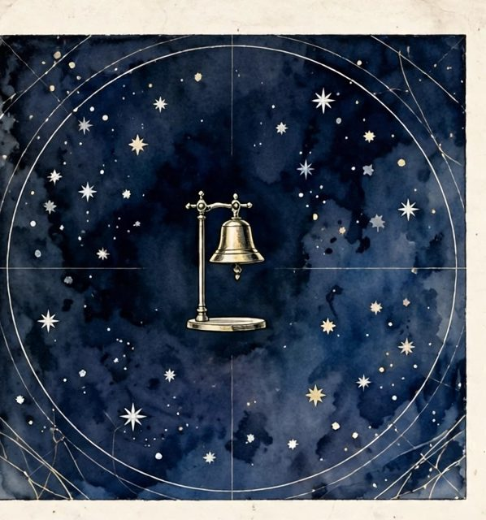
A hand bell on a stand, rung politely under the stars.
At the appointed point the bell is rung. It is a plain hand bell on a stand, brought out for the ceremony and returned afterwards, and in the vacuum above Mare Tranquillitatis it makes no sound at all. The registrar rings it politely anyway, with one clear motion, and then sets it back on its stand.
Those present nod, as if the bell had been heard, and in the terms of the ceremony it has been. The ringing marks the moment the release becomes complete, and the nodding is recorded alongside it. The bell is wiped, covered, and carried back to the Desk, where it will wait for the next occasion.
66The Desk of Releases
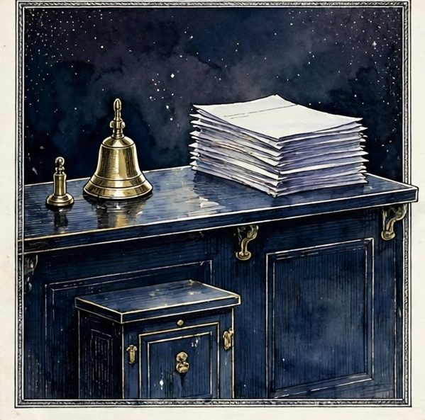
The Desk of Releases: a counter, a brass bell, a stack of blank forms.
Filing begins at the Desk of Releases, which is a counter, a brass bell, and a stack of blank forms, kept in that arrangement. The Desk serves the Antigravity Division, Department of Weightlessness, in the volume of sky above Mare Tranquillitatis, Sector G. A citizen arrives, rings the bell once, and waits to be attended to in turn.
The clerk provides one form, Form HLH-A-001, and a pen that is expected to be returned to its tray. The form is completed at the counter, in clear writing, and handed back across it. That handing back is the filing. The clerk stamps the copy, keeps the stub, and places the original where the day's work collects. Filings made from this page reach the counter by the same route, through the Party Desk form: the party's Desk receives the paper and passes it to the Desk of Releases, where it is stamped, stubbed, and filed as described.
67The Ledger and Its First Entry
A clean ledger open at its first entry.
The ledger is a clean book, kept on the Desk and opened each morning at the page where the work left off. Its first entry records the CERTIFICATE OF RELEASE No. 001 of 100, Form HLH-A-001, issued from the Registry of the Unbound. The handwriting is even, the line is ruled, and no correction was required on that page.
Every later entry follows the form of the first, with the number, the name, and the time of arrival at the Desk. The clerk does not decorate the margins and does not abbreviate the titles of the department. When a page is full, it is turned once, smoothed once, and the writing continues without a gap in the sequence.
68The Hundredth Certificate
The hundredth certificate leaving the Desk on a silver tray.
The hundredth certificate leaves the Desk on a silver tray, carried at a level pace by the clerk on duty. The tray is the department's ordinary tray, polished for the occasion and otherwise unchanged. The certificate rests flat upon it, weighted only by its own seal, and does not lift during the short journey to the ceremony table.
With its departure, the first hundred recorded in the Registry of the Unbound is complete. The Desk pauses briefly, not in celebration but in acknowledgement, and the ledger entry is checked twice before the line is ruled. The tray is returned empty, wiped, and placed back beneath the counter for the work that follows in due course.
69The Hundred-and-First Filing
An empty form tray marked only by a star.
The hundred-and-first filing receives a number, and patience. The number is issued in the same sequence as the hundred before it, written in the same hand, and entered in the ledger without distinction. The patience is not written down. It is understood by the citizen, conveyed by the clerk in few words, and observed by both parties thereafter.
On the Desk, the form tray stands empty for a time, marked only by a star, indicating that the next series has not yet been opened. The filing remains in its place in the sequence while it waits. When the tray is filled again, the star is removed, and the hundred-and-first form is taken first, as its number requires.
70Is It Safe?
A citizen asking a question at the Desk of Releases, the clerk listening with full attention.
The Desk is asked this question regularly, and answers it plainly. This is a work of speculative fiction and a collectible print. The certificate releases no one from actual gravity, and the Desk refers the citizen to that honesty line first, reading it aloud if the citizen would like it read aloud.
The Desk refers the citizen to the tether second. On paper, the line is held, the chart is kept, and the filing is complete in every particular the Desk controls. Beyond the paper, the Desk makes no promise that the paper itself cannot keep, and it notes the question as answered.
71Can I Come Back?
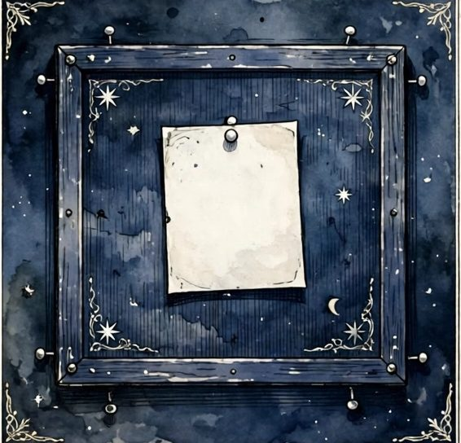
A notice board with a single pinned card, left blank for the next question.
Yes, in the sense that the record allows. Gravity is patient, and nothing in the Certificate of Release, Form HLH-A-001, prevents a return from being entered in the same hand and on the same chart as the departure, on whatever day the return is properly reported to the Desk of Releases.
The Desk keeps your chart while you are above Sector G, above Mare Tranquillitatis, in the quiet part, seen from slightly above. When you come back, the chart is taken down, the return is noted beneath the departure in matching ink, and the chart is filed again in its accustomed place.
72What If My Line Is Let Go?
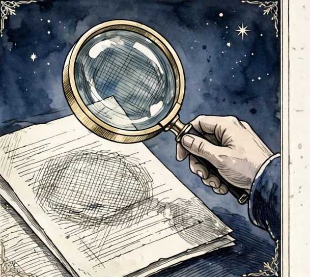
A magnifying glass held over a sheet of fine print at the Desk.
Then you are the holder. The Tether Card anticipated this case when it was drawn up, and it states the position without alarm, in a clause printed clearly enough to read without assistance. A line that is let go does not end the arrangement. It changes who is responsible for holding it.
The Desk records the change when it is reported, in the ordinary way and without additional forms. Until it is reported, the Registry of the Unbound keeps the last named holder on the chart, because the Registry records what it has been told, in the order in which it was told it.
73Who May Hold My Line?

A citizen reading a question sheet while drifting slowly backward from the Desk.
Anyone you name. The citizen writes the name on the Tether Card, the clerk witnesses the writing, and the Registry of the Unbound enters the name on the chart exactly as written, including any spelling the citizen prefers and any second name the citizen wishes to stand ready in reserve.
The Registry does not judge the choice. It does not rank holders, approve holders, or keep a separate list of holders it would have chosen instead, however strong its private views might be. Its task is narrower and plainer. It keeps the name legible and the line attached to it.
74Why One Hundred?
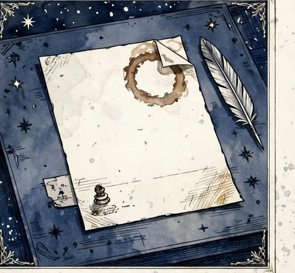
A returned form with a coffee ring in its corner, accepted and filed all the same.
Because it is a first hundred, like the Permit had a first hundred. A hundred certificates can be counted without machinery, checked without haste, and corrected without a system for correcting corrections built on top of them. The Desk prefers, on principle, a number that it can stand behind in full.
A number the Desk can keep by hand can also be kept honestly. Each entry is written, read back aloud, and filed in order, from the first certificate to the hundredth. If the hundred is completed, the book closes on a complete hundred, and the Desk regards that as sufficient for one book.
75What Does the Desk Need From Me?
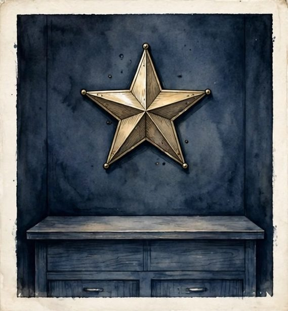
A plain brass star mounted above the Desk of Releases.
A name for the blank line, and a filing, made on this page through the Party Desk form. The name is written as the citizen wishes it to appear on the Certificate of Release, in the citizen own hand where possible. The filing is the entry of that name in the Registry of the Unbound, in sequence, under the brass star.
Nothing further is required by the Desk. No account of reasons is requested, and no summary of intentions is attached to the entry or kept in a separate drawer. The name is filed, the certificate is recorded, and the citizen is free to keep the document exactly as it was issued.
76The Gravity Division
The Gravity Division issues the flagship, and files everything else under pending.
Within the Holding, the Gravity Division is responsible for one thing: the issuing of Lunar Building Permits. It does not manage the other departments, speculate about their timetables, or borrow their stationery. Its remit begins with a plot, a form, and a name, and it ends when all three have been properly recorded.
Gravity is the Division's flagship because it was ready first. Other work in the Holding is real, in the Department's sense of the word, but it is not yet issuable. The Division prefers a short list that can be honoured to a long list that must be explained.
For that reason the Division keeps its desk small and its records current. Every permit it grants can be accounted for by number, by plot, and by name, without reference to plans that have not yet been approved for issue.
77The Registry of Plots
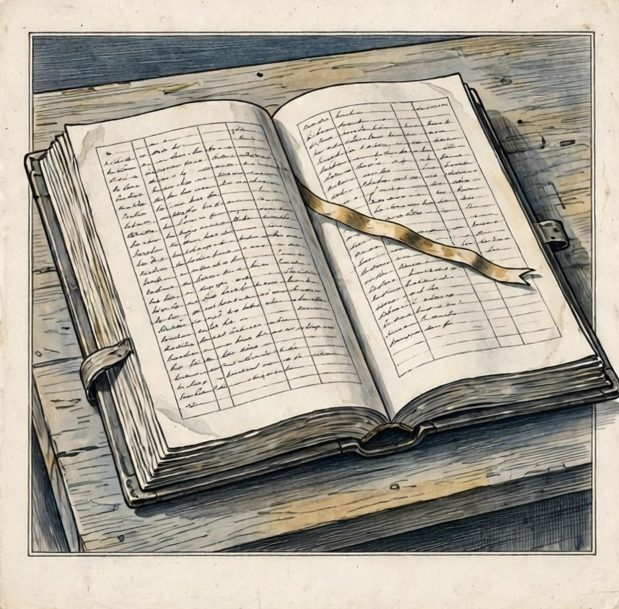
The Registry is a book before it is anything else: names on the left, numbers on the right.
The Registry of Plots is the book in which the Department records every permit it grants. Each entry carries a number, a plot, and the name of the citizen to whom it was issued. An entry, once made, is not rewritten to look tidier. Corrections, if any, are noted in the margin and initialled.
The Registry is the reason a permit is more than a printed sheet. The sheet can be framed, kept in a drawer, or given away. The entry remains. If the sheet and the book ever disagreed, the Department would trust the book, and then investigate the sheet at some length.
The book itself is kept flat, bound plainly, and opened only for entries and for legitimate enquiries from its citizens. A registry that is handled constantly for display soon looks impressive and reads badly. This one is intended to be read in a hundred years.
78The Permit
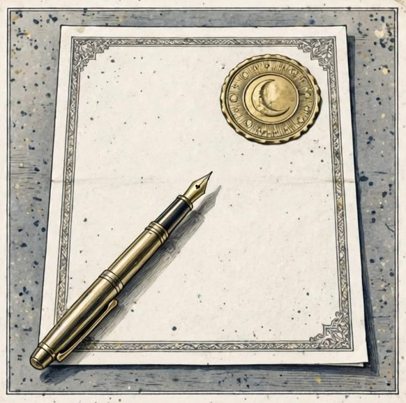
The Permit: permission to imagine, in writing, numbered by hand and sealed in gold.
The Permit is the first of the three paper artifacts in the pack, and the document around which the others are arranged. Its subtitle, printed without apology, is 'Permission to imagine, in writing.' The Department considers imagination an activity that benefits from authorisation, a reference number, and a place to sign.
Each permit is numbered by hand, sealed in gold, and issued in the citizen's name, which is then entered in the Registry of Plots. It is not personalised decoration added to a standard sheet. The number, the name, and the entry are the document. Without them, it would be merely a very formal piece of paper.
The other two artifacts in the pack support it: the Plot Map shows where the permission applies, and the Citizen Card shows to whom the Holding belongs. The Permit remains the senior document. If only one sheet is framed, the Department recommends this one.
79Form HLH-G-001
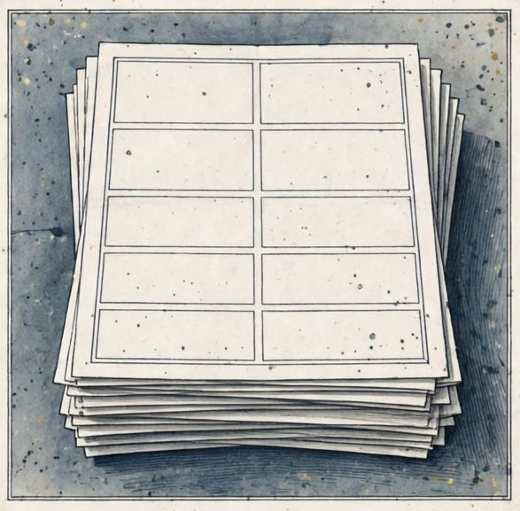
One form, one purpose: HLH for the Holding, G for Gravity, 001 because it was first.
The permit is issued on Form HLH-G-001. The Department is fond of form numbers, and makes no attempt to hide it. A number of this kind tells a trained reader three things at once: which institution issued the document, which division is responsible for it, and where it stands in that division's sequence.
There is one form because there is one purpose. The Department does not issue a general permission to be adapted later to any plot, structure, or citizen. Form HLH-G-001 covers this permit, this plot, and this class of structure. Anything else, in due course, will receive a form number of its own.
Citizens completing correspondence with the desk are asked to quote the form number where relevant. It saves the Registrar a morning of cross-referencing, and it gives the citizen the quiet satisfaction of addressing an institution in its own preferred language: exactly, and by number.
80No. 001 of 100
Permit No. 001 is not a prototype; it is the first page of someone's collection.
The first issue consists of 100 packs, numbered in order of issue. Permit No. 001 is therefore not a sample, a prototype, or a departmental copy retained for display. It will be issued, to the first citizen entered for it, with the same form, seal, and registry entry as No. 100.
First numbers carry a particular weight in any collection. They mark where the sequence began, before the institution had a history to point to. When the hundred are gone, Module No. 2 follows, and No. 001 becomes what the Department already calls it in its notes: the first page of someone's collection.
The Department does not reserve early numbers for itself, for patrons, or for anyone who writes a particularly persuasive letter. Order of issue is the whole rule, published in advance and applied without exception. No. 001 will go to whoever is entered first. That is its distinction.
81Granted, Provisionally, Forever
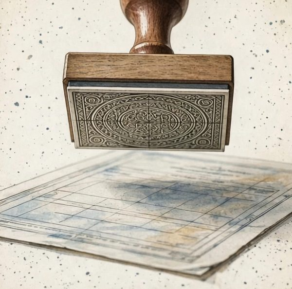
The status line reads 'Granted, provisionally, forever' — all three words are meant.
The status of the permit, as printed, is 'Granted, provisionally, forever.' Citizens occasionally ask which word governs the other two. The Department's answer is that each governs a different thing. Granted describes the decision. Provisionally describes the honesty. Forever describes the intention.
A lesser institution would choose one word and delete the others for neatness. The Holding keeps all three, because all three are true at the same time. The permit is granted now, it is provisional because everything on paper is, and it is intended to stand without expiry for as long as the Registry itself is kept.
The Department has been asked whether the line is a joke. It is printed on the permit, which is a serious place, in the status field, which is a serious field. If citizens find it amusing, the Registrar accepts this without comment and files the enquiry.
82The Gold Seal
Gold, circular, and final: the last thing applied to the permit, and the first thing checked.
The permit is finished with a gold seal. It is circular, as seals in this office are, lettered around its rim 'HI-TECH LIMITED · GRAVITY · MMXXVI', with a crescent moon at its centre and the words 'EST. ON PAPER' set beneath it. It is applied last, after the number, after the name, after the entry has been made.
A seal does not add information. Everything it says is printed elsewhere on the form in ordinary type. What it adds is conclusion. A document with a seal has been through the whole process and come out the other side approved. Citizens tend to touch it first. The Department understands, and uses a gold that rewards it.
Checked against the master die before each use, the seal is either perfect or the sheet is reprinted. There is no third state. The Registrar permits no almost-sealed permits, and the Registry contains none.
83Mare Tranquillitatis

The Sea of Tranquility is not a sea, has never held water in living memory of the Moon, and remains the plot's address.
Mare Tranquillitatis is Latin for the Sea of Tranquility. Early observers, seeing a smooth dark plain through small telescopes, took it for water and named it as they found it. The name has been kept, as good names are, long after the error was understood.
The plain is basalt — cooled lava, levelled by its own weight, dry for some three billion years. It is one of the calmest-looking surfaces on the Moon, which the Department considers a suitable character for a first plot. The citizen's address therefore begins with a sea that is not a sea. The Registry records this without embarrassment. A name is a name once it has been used on enough maps. The Department chose it for the first issue in part for that calm, and has seen no reason since to move the plot elsewhere.
84Sector G

The Sea of Tranquility is divided by the Department into sectors, and Plot 001 stands in Sector G.
A sea, even a dry one, is too large to administer whole. The Department therefore divides Mare Tranquillitatis into sectors: a plain grid, drawn over the map, each square lettered in order. The grid does not disturb the ground. It disturbs only the paperwork, which is what grids are for.
Sector G was selected for the first issue for sound registrar's reasons. It lies in the quiet part of the Sea, it contains the coordinates the Department had already chosen, and G — for Gravity, the Division issuing the permits — seemed an appropriate letter to begin with. Earlier sectors remain on file, unissued. The Department starts where it starts, and records that it did so. The remaining sectors will be opened in their turn, when Module No. 2 and its successors require them, and not before.
85Plot 001
Plot 001 is the first plot in Sector G, and the first entered in the Registry of Plots.
A plot, in the Department's usage, is a defined portion of a sector, small enough to be attended to and large enough to imagine a Habitat Module, Class C, standing on it — one module, up to three citizens. Plot 001 is the first such portion marked out in Sector G.
On paper, a plot is four boundaries, a number, and an entry in a registry. That is not a small thing. Before the marking, the ground was continuous and unconsidered. After it, one part of the Sea of Tranquility has a designation, a permit, and a citizen whose name is kept against it. The ground has not changed. Its standing in the records has changed completely. Subsequent plots will be numbered in order of issue, as the first issue proceeds, each with its own entry and its own map.
86The Quiet Part
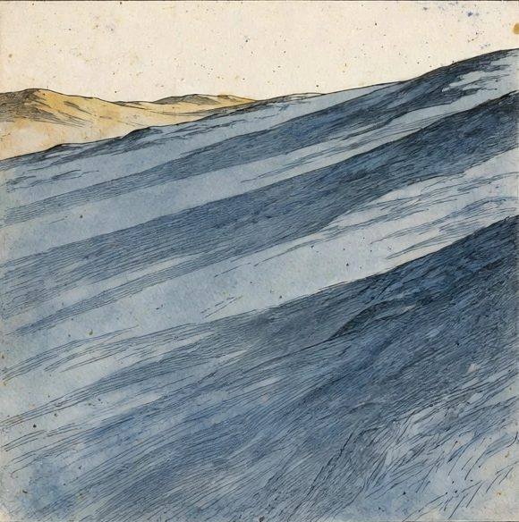
Against the coordinates on the Plot Map, the Department has written a gloss: the quiet part.
Most fields on the Plot Map are filled with figures. Against the coordinates, however, the Department permits itself four words of description: the quiet part. It is the only gloss of its kind in the pack, and it has survived every revision of Form HLH-G-001.
Quiet, here, is a specification rather than a mood. The plot does not lie on a route, beside a landmark facility, or under any known traffic. Nothing is scheduled to happen there. In a registry, quiet means the entry can be expected to remain as written, undisturbed by amendments. The Department considers this the highest compliment it can pay a location, and pays it in small type. Visitors, when they eventually come in principle, are asked in the conditions to greet their neighbours and otherwise to preserve it.
87Scale: 1 : Imagination
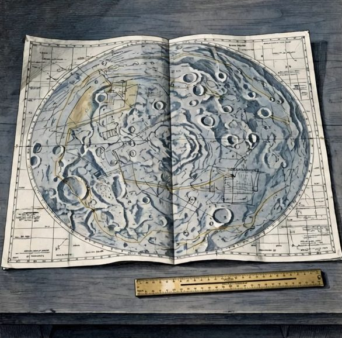
The Plot Map declares its scale plainly below the title: Scale: 1 : Imagination.
Every honest map states its scale. The Plot Map states its own below the title, where a scale belongs: Scale: 1 : Imagination. The Department prints it in the same type as the coordinates, because it is information of the same kind.
The meaning is straightforward. One unit on the map corresponds to one unit of imagination applied by the citizen. A plot that measures a hand's span on paper measures, under this scale, exactly as large as it is imagined to be — provided the imagination is applied within Sector G and in accordance with the conditions. Other maps in the atlas use ratios. This one uses the citizen. The Department considers the scale accurate, reproducible, and unlikely to be superseded.
88The Pack, Whole
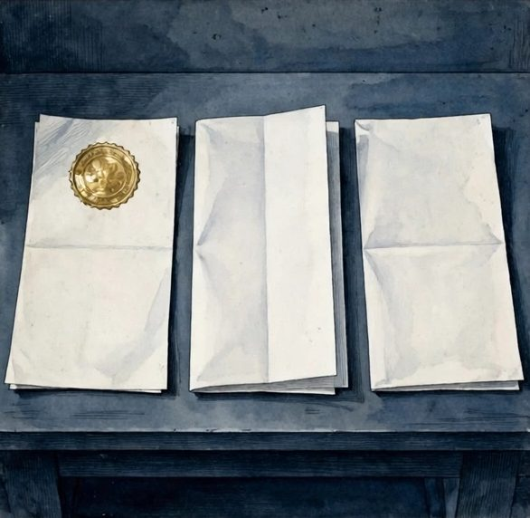
The complete issue, laid out in order: three sheets, no more, no less.
The pack contains three sheets of paper. That is the entire issue, and it is enough. There is no box within the box, no code to redeem, and no further item promised at a later date under a separate cover.
First comes the Permit, numbered by hand and sealed in gold. Second comes the Plot Map, showing Mare Tranquillitatis, Sector G, with one plot marked. Third comes the Citizen Card, recording that the holder is a citizen of Hi-Tech Limited Holding.
Together they do one job properly. One sheet grants, one sheet locates, and one sheet belongs. The Department issues nothing else in this module, and asks the holder to want nothing else from it. The Registry files it under Module No. 1, without addition or apology.
89Artifact 01 — The Permit Itself
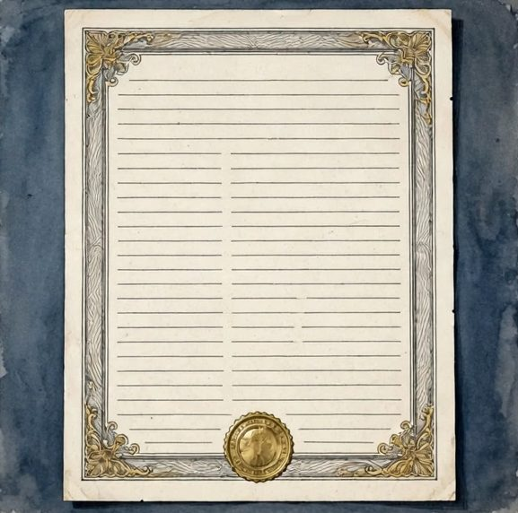
Form HLH-G-001, as issued: the first sheet, and the reason for the other two.
The Permit is the first sheet in the pack and the heaviest in the hand. It is printed on good paper, the sort that keeps a crease where it is folded and resists being treated casually.
Its fields are few and final. At the head: Hi-Tech Limited Holding, Gravity Division, Department of Lunar Construction. Below: Permit No. 001 of 100, the Citizen's name, and the plot — Mare Tranquillitatis, Sector G, Plot 001, at 0.67 degrees N, 23.47 degrees E. At the foot: Form HLH-G-001, and the status, Granted, provisionally, forever.
A border runs around the whole sheet, engraved in the Holding's style. It does not decorate the document. It contains it, in the way a frame contains a statement the Department intends to stand by.
90Artifact 02 — The Plot Map
The second sheet: Mare Tranquillitatis, Sector G, surveyed in the Holding's style.
The second sheet in the pack is the Plot Map. Where the Permit states, the Map shows. It covers Mare Tranquillitatis, Sector G, the quiet part of the Sea of Tranquillity, drawn at the scale printed plainly in its margin: 1 : Imagination.
One plot on the map is marked in gold: Plot 001, at 0.67 degrees N, 23.47 degrees E. The rest of the sector is surveyed with equal care, which is to say its craters are placed, its lines are ruled, and its remaining plots are left respectfully blank.
The Map carries its own summary in the margin: Your plot, marked. Your neighbours, theoretical. The Department considers that a complete description of the situation. It is issued folded once, to travel with the Permit.
91Artifact 03 — The Citizen Card
The third sheet: small, formal, and meant to be kept on the person.
The third sheet in the pack is the Citizen Card. It is smaller than the Permit and smaller than the Map, and it is the only one of the three meant to leave the house. The Permit belongs on a wall or in a drawer of record. The Card belongs with its citizen.
It certifies, in the Holding's formal wording, that the named holder is a citizen of Hi-Tech Limited Holding. It carries the holder's name and its place in the Registry of Plots, and it asks nothing further of anyone who is shown it.
Three sheets, three duties. The Permit grants the plot. The Map shows where it lies. The Card says who holds it — which, in the Department's order of things, is the part worth carrying.
92The First Condition, Stated
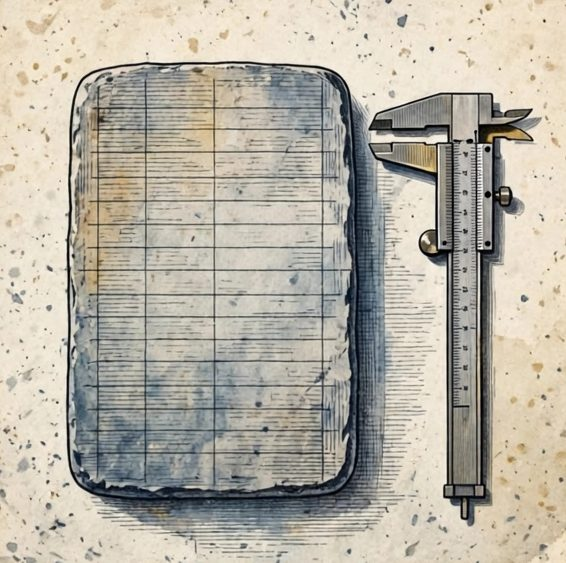
Condition One, as printed on the Permit, in full.
Every permit issued by the Department is subject to the five Conditions of Construction, printed on the Permit itself. The First Condition reads: Gravity at the site is limited (1.62 m/s²). Structures, ambitions, and paperwork must be planned accordingly.
It is the Department's physics, stated once and applied everywhere. The figure is not negotiable, not averaged, and not subject to appeal on grounds of enthusiasm. The Moon at Mare Tranquillitatis offers 1.62 metres per second squared, and the Holding's paperwork begins from there.
Citizens are asked to read the condition before planning anything. It is placed first among the five because everything built under this permit is built under it. The remaining four conditions follow it on the same sheet, in the same type.
93The Second Condition, Stated
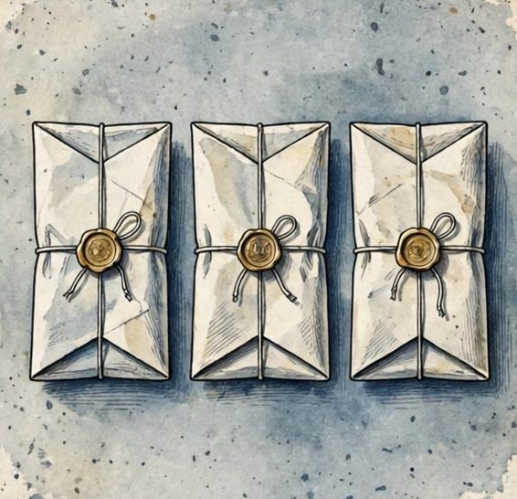
Condition Two, as printed on the Permit, in full: three limited things in a row.
The Second Condition of Construction reads: The Holding is limited. This permit is limited. Liability, accordingly, is limited. It is printed on the Permit directly beneath the First, and it is the shortest argument the Department makes.
Three limited things are set in a row. The Holding is limited — it says so in its nature and its name, Hi-Tech Limited Holding. The permit is limited — one plot, one citizen, the conditions stated, nothing implied beyond them. Liability, accordingly, is limited, following from the first two as a conclusion follows from its premises.
The honesty line of the whole issue belongs with this condition in spirit: a work of speculative fiction and collectible print; the permit grants no real property, no jurisdiction, and no rights on the Moon.
94The Third Condition, Stated
Condition three, quoted in full, concerning visibility and the standing of a good drawing.
The third of the five Conditions of Construction reads, in full: "The structure must be visible from Earth at least in principle. A good drawing counts." It is entered here without abbreviation, because conditions, like neighbours, are to be met whole. The citizen is asked to build nothing that Earth could not, in principle, be shown. Secrecy is not a permitted building material.
The Department frames the condition as a courtesy. Earth has watched the Sea of Tranquillity for a very long time, mostly in silence. A structure raised there owes its home planet, at minimum, the possibility of being seen. The requirement is modest, the wording is exact, and the second sentence is where the Department's heart quietly resides.
95The Fourth Condition, Stated
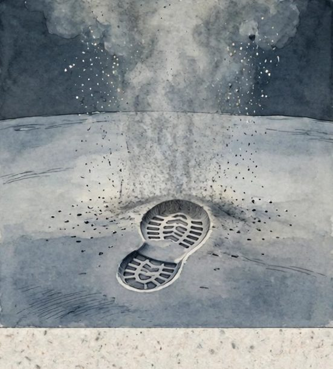
Condition four, quoted in full; the whole of lunar dust law, in two sentences.
The fourth of the five Conditions of Construction reads, in full: "Dust belongs to whoever it settles on. Sweep responsibly." The Department has considered whether dust law on the Moon requires further articles, schedules, or definitions, and has concluded, each time, that it does not. Two sentences have covered every case brought before the Registry, including the difficult ones.
The first sentence settles ownership. The second settles conduct. Between them there is no room for a dispute to grow, which is, in the Department's experience, exactly the right size for a law. Citizens are asked to learn condition four by heart. It is the shortest of the five, and the one most likely to be needed on an ordinary day, in ordinary light, with dust already descending.
96The Fifth Condition, Stated
Condition five, quoted in full, in which manners are made a condition of construction.
The fifth of the five Conditions of Construction reads, in full: "Neighbours are to be greeted on arrival, regardless of how long they have been neighbours." The Department places manners last among the conditions, not because they matter least, but because they are what the other four are for. Gravity, limits, visibility, and dust all describe the site. This one describes the citizen arriving at it.
It is a condition of construction in the strict sense. A module raised by someone who will not greet the plot beside it is, in the Registry's view, unfinished, whatever its roof may claim. The greeting is not an ornament added after building. It is part of the building, load-bearing in its own quiet way, and the permit is not fully in order until it has been given.
97The Oath
The oath kept by the Holding, recorded beside the Registry rather than inside it.
Citizenship in this Holding has a paper form, and it also has a spoken form. Alongside the Permit, the Plot Map, and the Citizen Card, the Holding keeps an oath. It is not printed on the Permit, and it is not a condition written into the plot. It stands next to them, as a companion.
The oath is a short declaration, kept in the same register as the other documents of the Department. It is read aloud by the citizen who chooses to take it, in plain words, without ceremony added for effect. The Department records that it was taken, and by whom, and in what order.
A registry records where a name belongs. An oath records what a person intends. The Holding keeps both books open, because a collection of names, on its own, seemed to the Department to be only half of a citizenry.
98How Claiming Works
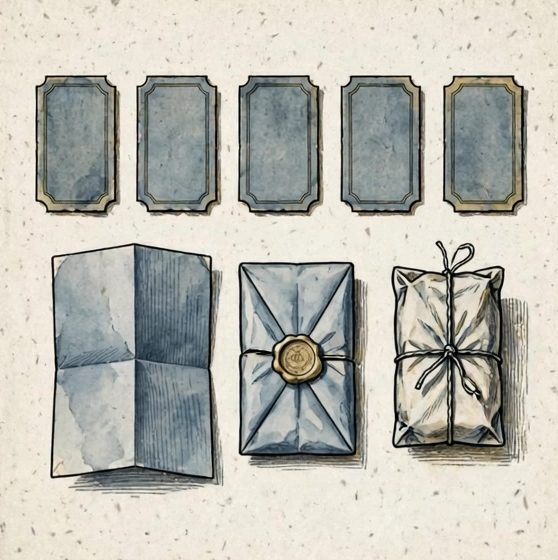
The whole procedure in order: file, reserve, reply, and receive.
Claiming works as follows, and the Department carries it out in the same order for every citizen. First, the reader files at the Registrar's Desk on the Gravity landing, where the pack is claimed, using the form on that page, giving a name, an email address, and a note if a note is wanted. Filing is the act that begins a claim. On this page, the program is presented, and filings are taken by the Party Desk.
Second, the filing reserves the next number. Permits are numbered in order of claim, so a claim takes the lowest unclaimed number at the moment it is filed. Third, the Department replies, confirming the reservation. No money changes hands at the point of filing.
Fourth and last, the citizen receives the pack: the Permit, numbered by hand and sealed in gold, the Plot Map, and the Citizen Card, with the name entered in the Registry of Plots.
99Numbering in Order of Claim
The queue of claims, in which the order of filing decides the order of numbers.
Permits are numbered in order of claim. First filed, first numbered. A claim that arrives before its neighbours takes the earlier number, and a claim that arrives after them takes the later one, and the Department does not rearrange the queue for any reason it has yet encountered.
This rule is simple enough to state in one sentence, and the Department treats it as foundational. The queue is the constitution. It decides who holds No. 002 and who holds No. 099 without argument, favour, or auction, and it allows any citizen to check a number against a position and find that they agree.
For the reader, the consequence is plain. On the Gravity landing, where claims are filed, the number you receive is the next number when you file. It cannot be chosen, requested, or held open by correspondence. It is assigned by the order in which citizens arrive at the Desk. On this page, filings go to the Party Desk, and no permit numbers are assigned.
100No Payment on This Page

This page takes filings only; payment follows the Department's reply, by letter.
No payment is taken on this page. A reader may file with the Party Desk here, read every block, and inspect the certificate at its own desk, without money being requested at any point. The form asks for a name, an email address, and a note. It does not ask for payment details.
The reason is a matter of order. A filing reserves a number, and until a number is reserved there is nothing definite to pay for. The Department therefore replies first, confirming the reservation and giving the payment details, and payment follows the reply rather than preceding the claim.
This keeps the transaction in the sequence the Registry understands: a name, then a number, then a letter, then payment, then the pack. Money that arrived before a filing would have no line in the book to belong to.
101The Digital Hall of Fame
A hall that exists only as light: rows of small framed profiles receding into deep indigo distance, each frame lit by a single pale-gold point of light, no floor beneath them, banners without wind hanging still between the frames.
The party keeps a Hall of Fame, and it keeps it the way it keeps everything: in writing, on the record, and at a distance. It is a digital hall because the party's citizens are not gathered anywhere — they are filed, everywhere, at their own altitudes — and a hall built of rooms would exclude precisely the citizens it exists to honour. Its walls are a page; its light is a screen; its doors are never closed, because they were never built.
A profile is placed in the Hall when its member writes to the Party Desk. This is the whole of the ceremony, and the Desk states it as a standing promise: write to us and we will place your profile in the digital Hall of Fame. No vote is taken, no jury sits, no fee is filed — there are no fees anywhere in this party. The writing is the qualification; the Hall is simply where the writing is kept where it can be seen.
102A Profile, Placed
A gloved hand sliding a single profile card into a glowing slot in a dark registry wall, among hundreds of identical quiet slots, a fine silver tether line trailing from the card.
A profile in the Hall records what the party knows of a citizen, and nothing it does not: the name as filed, the number of the Party Card, Form HLH-P-001, the number of the Certificate of Release, Form HLH-A-001, where one has been issued, and the date of the filing that placed it there. One line of the profile is the member's own, written in their own words, and the Desk corrects nothing in it — not the spelling, not the altitude, not the hope.
Profiles stand in the Hall in the order of their filing, earliest first, and no profile stands above another: the Hall has no podium and no footnotes, and fame in it is not a height but a presence — to be in the record, among the released, in writing. A profile is never removed. A citizen who returns to weight remains in the Hall, with a marginal note in pencil recording that the citizen is presently elsewhere — and the profile, like the citizen, stays on the record regardless.
103Correspondence with the Gravity Division
Two streams of envelopes crossing in opposite directions between a low stone building and a pale tower, over a still, silvery landscape.
Correspondence between the party and the Gravity Division is regular, formal, and slow, by mutual preference. Letters are addressed in full, signed in full, and answered in the order in which they were received, even when a later letter plainly answers an earlier one. The file, read in sequence, therefore contains several apologies for delays that had not yet occurred.
No letter from either desk has ever been marked urgent. The Division, working at lunar gravity of 1.62 m/s², regards urgency as a local condition. The party, working without weight, regards it as a claim requiring evidence. Between these two views a steady, useful correspondence has continued since the founding of Hi-Tech Limited Holding in MMXXVI.
104Joint Communiqués
A single broad sheet pinned between two posts, one post driven deep into dark ground and the other floating just above it, in soft morning light.
When the two divisions speak together, they do so by joint communiqué, a document drafted alternately, sentence by sentence, by the Gravity Division and the Antigravity Division. The resulting text is measured, balanced, and almost entirely free of direction. Readers seeking the position of either desk are advised to attend to the punctuation, where the differences principally reside.
Communiqués are issued for occasions of shared concern: a new sector opened, a registry completed, a tether of unusual length recorded. They are posted at both desks, filed in both archives, and summarised in the party newsletter in the next available issue. The Division keeps its own summary, which differs only in being, measurably, heavier.
105Is This a Real Party?
A watercolor of a modest desk, a stamp, and a neat stack of cards arranged beneath a tall window, with nothing beyond the glass but empty, luminous air.
The Desk answers as follows. The Party of Release is real in the way that a filing is real: it has a name, a card, a registry, and papers that can be held, read, and kept. It exists within the paper universe of Hi-Tech Limited Holding, and within that universe its records are maintained carefully and its proceedings are conducted in writing, in order, and without raised voices.
Beyond that universe, the Desk makes no larger claim. The party is a work of speculative fiction and collectible print. It is registered nowhere, it governs nothing, and it releases no one from actual gravity. Citizens who require a plainer answer are invited to read the fine print at the close of this page, where the same answer is given again, in smaller type and with equal calm.
106Must I Leave the Gravity Division?

A watercolor of two doors standing side by side in a pale corridor, one weighted with a stone, the other opening onto bright, empty air.
The Desk answers as follows. No. Release by the Antigravity Division does not require resignation from the Gravity Division, and the Party Desk keeps no record of divided loyalties because it recognises no division to be divided. Many citizens hold a Lunar Building Permit, Form HLH-G-001, for years before a Certificate of Release is ever filed in their name, if one is filed at all.
The two divisions of Hi-Tech Limited Holding — Gravity and Antigravity, the party's two programs, both presented on this page — proceed independently, each with its own forms, its own registry, and its own view of the citizen's proper position. A permit describes what may be built and where it may stand. A certificate describes a release that has been recorded. Neither document cancels the other. Both, where both exist, are simply kept in the same folder.
107Can I Hold a Permit and a Card?
A watercolor of a pair of hands holding a heavy permit folder and a light card at once, balanced evenly above a quiet desk.
The Desk answers as follows. Yes. A citizen may hold a Lunar Building Permit, Form HLH-G-001, from the Gravity Division — the party's downward program, presented on this page — and a Party Card, Form HLH-P-001, from the Party of Release at the same time, in the same hand, without contradiction. The Desk has observed this arrangement frequently and has never found it necessary to comment upon it in the margin.
Indeed, the combination is considered ordinary. The permit concerns foundations, loads, and the patient business of remaining in place. The card concerns membership among the Unbound and the quieter business of being recorded as released. One document looks down, the other looks up, and the citizen between them remains, in the Desk's assessment, perfectly level. Both papers are filed together and retrieved together, as a set.
108What Does Membership Cost?
A watercolor of an empty collection tray on a registry counter, polished and unused, beside a stamp resting on its pad in afternoon light.
The Desk answers as follows. Nothing is sold here. Membership in the Party of Release is filed, never bought, and the party charges nothing for a card, an entry, a certificate, or an answer to a question at the Desk. There is no till at the Party Desk, no ledger of payments, and no occasion on which either would be required.
A citizen who offers payment will have it returned with thanks and a brief note explaining the position. The confusion is understandable and is not held against anyone. Print, paper, and postage exist in the ordinary world and belong to that world. Within these pages, however, belonging is a matter of record only, and a record, once properly made, is not improved by a receipt.
109What Is the Anthem?

A watercolor of a gathered crowd of small, still figures beneath a flag-like chart of rising lines, all facing the same empty, bright horizon in silence.
The Desk answers as follows. The anthem of the Party of Release is a held silence. It is observed at the opening of the Congress in Writing, at the closing of the Registry for the day, and on any occasion when members find themselves together and in agreement that nothing needs to be added. Its duration is not prescribed. It ends when it ends.
No melody is filed with the Desk, and no words have been approved, because words were considered and set aside as an unnecessary weight. Members who hum during the anthem are not corrected; the silence is understood to be held collectively, and a certain amount of quiet humming is absorbed into it without difficulty. When the silence concludes, proceedings resume at the exact point where they paused.
110I Have Lost My Tether. What Now?
A watercolor of a single loose cord floating in gentle curves above a calm desk, while far below a small office continues its work undisturbed.
The Desk answers as follows. Please write to the Keeper of the Tether, whose office records all tethers issued, transferred, and reported lost. State your name as it appears in the Registry of the Unbound and the date, as nearly as you can recall it, on which the tether was last known to be in your possession. The Keeper will search the record in the usual way.
In the interim, no action is required and no penalty applies. A lost tether does not cancel a Certificate of Release, Form HLH-A-001, nor does it affect a Party Card already issued. Most tethers reported lost are later reported found, often in the place first considered and dismissed. The Desk recommends patience, a methodical search of coat pockets, and continued correspondence at ordinary intervals.
111Can the Party Expel Me?
A watercolor of a registry clerk calmly closing a ledger without haste, a door nearby standing open onto the same bright corridor it has always opened onto.
The Desk answers as follows. The Party of Release has no procedure for expulsion, and the Congress in Writing has never been asked to invent one. A registry that records release is poorly suited to recording banishment, and the Desk has consistently declined to develop the necessary forms. Members may drift away, fall silent, or disagree entirely, and their entries remain as they were made.
What the Desk can do, and does, is correct the record. An entry made in error will be amended, an entry made twice will be consolidated, and an entry made in another citizen's name will be removed and refiled properly. These are matters of accuracy, not discipline. No member has ever been struck from the Registry of the Unbound for conduct, temperament, or altitude.
112I Am Still Falling. Is That Allowed?

A watercolor of a small figure descending slowly and serenely past tall windows and drifting papers, arms relaxed, expression entirely untroubled.
The Desk answers as follows. Yes. Falling is noted in the Registry as a continuing condition rather than an irregularity, and a considerable number of the Unbound are recorded as falling at the time of filing and for some time afterward. Release, as certified on Form HLH-A-001, concerns a citizen's standing in the record. The direction of travel is a separate entry and is updated whenever word arrives.
Members who are still falling are asked only to keep the Desk informed of any change, particularly an arrival. Landings, when they occur, are entered without comment and without ceremony, though the Keeper of the Tether is always notified as a courtesy. Until then, the file remains open, the card remains valid, and the falling member remains, in every respect that the Registry recognises, in good standing.
113After the Hundred
A watercolor of a wooden drawer left slightly open in a quiet registry office, one hundred pale cards resting in neat rows inside while soft light falls across the desk.
The first edition of the Party Card, Form HLH-P-001, was limited to one hundred cards, and the hundredth card has its own quiet significance at the Party Desk. It closed a drawer. It did not close the Registry of the Unbound, which remains open in the manner of a window left ajar in a still corridor, admitting filings without urgency and without ceremony beyond the usual stamp.
Those who arrive after the hundred are recorded in order of arrival, with the same care given to the first. Their names are entered, their dates noted, and their papers kept in the adjoining folder, which is neither lesser nor provisional. The Party of Release makes no distinction between early and late release. A citizen is unbound when the certificate is filed, whether the card that follows bears a low number or none yet assigned.
114Membership, Withdrawn by Drifting Away
A watercolor of a small paper boat drifting across a still, pale sky above filing cabinets, its tether trailing loosely and untroubled behind it.
Membership may be withdrawn by drifting away. No form is prescribed for this purpose, although the Desk will accept a short note if the departing member prefers one for the record. In most cases there is no note. The member simply ceases to be where correspondence expected to find them, and the file, after a suitable interval, is marked accordingly in pencil.
Drifting away is not expulsion, resignation in protest, or loss of standing. It is recorded as a change of position, nothing more. Should the member drift back, the original entry is resumed and the interval entered as a blank space between two dates. The Party of Release, founded on paper within Hi-Tech Limited Holding, founded on paper MMXXVI, has always allowed generous margins for movement in every direction, including away.
115The Fine Print
A watercolor of a magnifying glass resting beside dense, orderly rows of tiny script on a cream page, soft light pooling across the paper.
The fine print appears at the close of this page because that is where fine print belongs, and the Party Desk asks that it be read with the same attention given to the larger type above it. The Party of Release is a work of speculative fiction and collectible print, presented within the paper universe of Hi-Tech Limited Holding, founded on paper MMXXVI. Nothing here describes an organisation operating elsewhere.
The party is registered nowhere. It governs nothing. It releases no one from actual gravity, and no filing made here alters any citizen's physical circumstances, obligations, or altitude. Membership is filed, never bought: the party sells nothing and charges nothing. These statements are not qualifications tucked beneath the real terms. They are the real terms, printed small only out of respect for an old and honourable convention.
116Registered Nowhere
A watercolor of a blank space on a great wall map where a seal might have been, surrounded by orderly shelves of ledgers fading into soft light.
For the avoidance of doubt, and because the Desk prefers doubt to be avoided wherever paper permits, it is recorded here that the Party of Release is registered nowhere. No authority holds its name in an official register, no jurisdiction recognises its proceedings, and no seal other than its own has ever been applied to its documents. Its Registry of the Unbound is its own, kept by its own Desk.
This is stated plainly, without apology, because a fictional institution honestly described loses nothing by the description. Within these pages the party keeps its records carefully, answers its correspondence, and observes its anthem of held silence exactly as set out. Outside these pages it claims no standing whatsoever. The line between the two is drawn here, in ink, where any reader may find it.
117A Work of Speculative Fiction
A watercolor of an open storybook on a registrar's desk, its illustrated sky lifting gently off the page while the office around it stays perfectly still.
The Party of Release is a work of speculative fiction. Its citizens, the Unbound, its Congress in Writing, its Keeper of the Tether, its flag, which is a chart of departures, and its motto, which appears at the close of this page, were all composed on paper to be read on paper. Hi-Tech Limited Holding and its two divisions are likewise fictional, founded on paper MMXXVI and maintained in print.
Speculative fiction, in the Desk's view, is an honest trade. It asks the reader to imagine a world arranged slightly differently and to consider, for the length of a page, how its paperwork might read. Nothing in that arrangement is presented as fact about the reader's own world, and nothing here should be relied upon as such. The imagining is the whole of the offer.
118Collectible Print
A watercolor of a small stack of printed pages and cards arranged on linen cloth, afternoon light catching their edges, a ribbon laid loosely across them.
What exists of the Party of Release, beyond the imagining, is print: pages, cards, and plates, made to be kept. The first edition of the Party Card, Form HLH-P-001, comprised one hundred cards, and this page belongs to the same order of object — printed matter that a reader may hold, file, frame, or place in a drawer beside other papers that matter to them for quiet reasons.
Collectible print asks nothing further of its keeper. It does not appreciate on any schedule the Desk would care to predict, it confers no rights beyond the keeping, and it represents no organisation beyond the fiction printed upon it. Its value, if the word must be used, is the ordinary value of a well-made page: that it was composed carefully, that it says only what it means, and that it keeps.
119What This Page Is, and Is Not
A watercolor of a single page held up to a window, light passing through the paper so that its printed lines glow faintly against a calm, empty sky.
This page is a landing page for a fictional institution: an introduction to the Party of Release and its two programs, Gravity and Antigravity, its Registry of the Unbound, its Party Desk, and its papers, written in the registrar's manner that the subject, however imaginary, deserves. The form it carries goes to the Party Desk within the fiction, as all filings do. Reading it requires nothing, promises nothing, and enrols the reader in nothing whatsoever.
This page is not the charter of any organisation in the reader's world. It registers no one, governs nothing, and releases no one from actual gravity. It sells nothing and charges nothing; membership in the fiction is filed, never bought. A reader who closes the page unchanged in every legal and physical respect has understood it exactly as the Desk intended, and is thanked for reading to the end.
120It Rises, Politely
A watercolor of a quiet registry office at dusk, its papers, cards, and ledger lifting a fraction above the desk in perfect order beneath a fading, gentle sky.
The Registry closes for the day in its usual manner. The filings are entered, the cards are counted, the tethers are accounted for by the Keeper, and the Congress in Writing adjourns without a motion, its minutes complete. The flag, a chart of departures, is folded along its accustomed lines. The anthem, a held silence, is held once more, briefly, and to good effect.
The Party of Release remains what it has been throughout these pages: a work of speculative fiction and collectible print, registered nowhere, governing nothing, releasing no one from actual gravity, and content to be exactly that. Its papers rest in their folders. Its citizens, the Unbound, rest wherever the record last placed them. And above the quiet desk, in the still air of the closing office, it rises, politely.